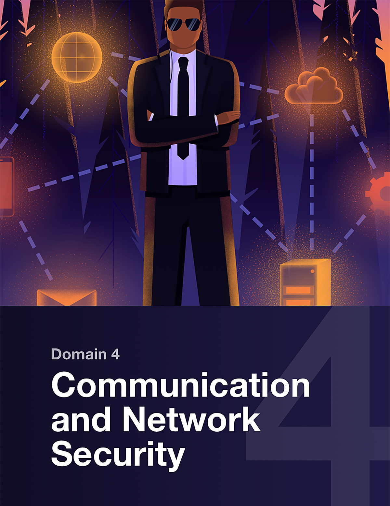
4.1 Implement secure design principles in network architectures
4.1.1 Open System Interconnection (OSI) Model
CORE CONCEPTS |
|
|
|
|

Though the CISSP exam is not a networking or purely technical exam, it does contain technical elements that can lead to overthinking beyond the general competence required to answer a question. If this statement applies anywhere, it especially applies with regards to Domain 4, because it tends to be more technical than the other domains. However, the approach to questions should still be from a management perspective. First, the concept of network and where security fits must be explored. Every organization utilizes one or more networks. That allows it to meet its goals and objectives cost-effectively and efficiently. Networks allow organizations to identify and realize revenue opportunities and communicate and interact with clients. Networks are a really valuable asset of any company and therefore require protection.
What Is a Network?
A network is at least two devices that are connected to each other. Like people, in order to communicate, these devices must be able to speak a common language (which is what a protocol does), and common rules of communication must be followed.
What Is a Protocol?
The common rules of network communication are called protocols. A protocol is simply a standard set of rules that are understood, conformed to, and abided by so that two or more devices on a network can communicate. Protocols allow messages to be sent and received, interpreted, and acted upon, and all of this takes place in the context of what's known as the Open System Interconnection (OSI) model.
OSI (Open System Interconnection) Model
Many people know the OSI model as simply a seven-word mnemonic that corresponds to its seven layers as depicted in Table 4-1. It's important to know the seven layers, what happens at each of them, and where security fits in. OSI stands for Open Systems Interconnection, which implies that the OSI model is about open systems that can interconnect and communicate with each other, using protocols. The OSI model is a structured, layered architecture comprising seven layers. Because it is a layered architecture, think of the seven layers of the OSI model as team members. Each member has responsibilities that allow the ultimate goal of communication to be accomplished. No layer can work on its own and accomplish this ultimate goal.
Although a lot of people simply refer to every type of information as "packets," that is actually incorrect. Information within the uppermost three OSI layers (Application, Presentation, and Session) is referred to as "data." When that reaches the Transport layer it is referred to as "segments" or "datagrams." At Layer 3 (Network), the term "packets" is used. Layer 2 (Data Link) uses the term "frames" while at Layer 1 (Physical) everything is just referred to as bits (or 0s and 1s).
|
7 Application |
Data |
|
6 Presentation |
|
|
5 Session |
|
|
4 Transport |
Segments or Datagrams |
|
3 Network |
Packets |
|
2 Data Link |
Frames |
|
1 Physical |
Bits |
Table 4-1: OSI Layers
Now, you may be wondering how you will be able to remember these seven layers. The two most commonly used mnemonics for OSI are: All People Seem To Need Data Processing and Please Do Not Throw Sausage Pizza Away. The first mnemonic refers to the OSI model from a top-down approach (Layer 7 to Layer 1). The second mnemonic refers to the OSI model from a bottom-up perspective (Layer 1 to Layer 7). Both are depicted in Figure 4-1.
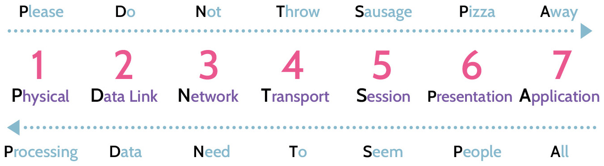
Figure 4-1: OSI Mnemonics
It's very important to know what security-specific features exist at different layers of the OSI model. The higher the layer, the more functional the security features become, and more comprehensive controls can be implemented; the lower the layer, the opposite is true. However, at the higher layers, the functionality is accompanied with complexity, which has an expense at speed and efficiency. Similarly, at the lower layers, where complexity is minimized, speed and efficiency are a given. At the lowest layer-the Physical layer-no intelligence exists. This is simply the layer that interconnects devices, and it is extremely fast.
Something else that should be kept in mind is that some types of devices-firewalls, for example-can be found at multiple layers in the OSI model. Firewalls can exist at three of the seven layers-Network, Session, and Application-and functionality at each layer varies significantly. At the Network layer, packet filtering firewalls can be found. Decision-making here is very limited, but processing efficiency is high. On the upper end, at the Application layer, application or application proxy firewalls can be found. They offer significant decision-making capabilities, but at the cost of substantial overhead and processing efficiency.
Clearly, the technology industry long-ago recognized that making security decisions requires striking a balance between functionality and efficiency. This explains the importance of security protocols, and why so many exist and operate at different layers of the OSI model.
Let's relate this and take it a step further. The OSI model is exactly that-it's a model, and a model is simply a representation of something and the accompanying rules. The OSI model is a representation of communication rules and to work the OSI model must be implemented. The actual implementation is through TCP/IP. The internet protocol suite (TCP/IP) consists of many protocols-a family of protocols. TCP and IP and the other members of the protocol family run at different layers of the OSI model to support the underlying tasks of a given layer.
For example, the Network layer is primarily responsible for taking information and routing that, breaking it-fragmentation-into manageable chunks called packets and providing addressing so those chunks can be communicated across a network using a logical addressing scheme called IP addresses.
The Transport layer is responsible for transporting information that is being exchanged between devices. Think of it as the truck that carries information between two people. To provide reliable transportation, a road should be built that facilitates ordered flow of traffic, including consistent reporting of road conditions. Within the family of protocols mentioned above, TCP is the protocol that provides ordered and reliable transport service.
Conversely, unordered, and unreliable transport services can also be provided by simply pointing the trucks toward the destination and not relying on a specific road. In this case, the trucks are simply loaded, and the drivers are told to go find the destination. The drivers will likely follow different routes, arrive in different order, and some may not arrive at all. All the trucks may travel quickly, but otherwise they'll be completely unreliable. Within the family of protocols, UDP is the protocol that operates in a similar manner-unordered and unreliable, but very quick, transport.
Let's consider this from the perspective of two people connected by devices across a network. If one person wants to send the other an email, an application like Outlook will be used to compose and send the message. Once ready to go, the person will hit "send." At this point, the Application layer will take the message, perform certain activities, and then pass it to the next layer, the Presentation layer. This process will continue all the way down to the Physical layer, which is where devices actually connect and bits (0s and 1s) are encoded as voltage and sent across the wire. Seemingly magically, those bits will travel the wire until they reach the other person's device via the Physical layer. At this point, the Physical layer will perform certain functions and pass the information up to the next layer, the Data Link. This process will continue all the way up to the Application layer, at which point the other person can read the email.
The description above describes two processes known as encapsulation and decapsulation. As information moves down, from the Application layer to the Physical layer, encapsulation is taking place. Each layer will add its own header and trailer information to the existing data and then pass it down to the next layer. On the other side, when the fully encapsulated information arrives, a process called decapsulation takes place, where the header and trailer information is removed layer by layer all the way up to the Application layer.
What happens and what protocols are found at each layer?
Note that although the OSI model consists of seven layers, the TCP/IP implementation consists of four layers as shown in Table 4-2. Like the OSI model, rules must still be followed, but just a bit differently. For instance, the top three layers of the OSI model are handled by the Application layer of the TCP/IP model. The Transport layer is the same in both models. The OSI Network layer is called the internet layer in TCP/IP and then the bottom two layers of the OSI model are handled by TCP/IP's link layer.
|
OSI |
Description |
Devices & Protocols |
TCP/IP |
|
7 Application |
Identify capabilities of applications and resource availability |
Application Firewall HTTP/S, DNS, SSH, SNMP, FTP |
4 Application |
|
6 Presentation |
Formatting of data |
XML, JPEG, ANSI |
|
|
5 Session |
Interhost communication and session management |
Circuit Proxy Firewall |
|
|
4 Transport |
End-to-end connection with error correction and detection |
TCP/UDP, iSCSI (SAN) |
3 Transport |
|
3 Network |
Logical addressing, routing and delivery of packets |
Routers, Packet Filtering Firewalls, IP addresses, ICMP, NAT |
2 Internet |
|
2 Data Link |
Physical addressing, and reliable point-to-point connection |
Switches, bridges, MAC addresses, L2TP, PPTP |
1 Link |
|
1 Physical |
Binary transmission of data across physical media (wire, fiber, etc.) |
Hubs, NICs, Network media |
Table 4-2: OSI vs. TCP/IP
4.1.2 Layer 1: Physical
CORE CONCEPTS |
|
|
|
|
|
|
Understand what happens at Layer 1 and how the primary wired transmission media types differ from one another
Layer 1, the Physical layer, focuses on how devices interconnect as well as encoding the bits, the 0s and 1s, that Layer 1 understands. Devices can connect using wired or wireless technologies. For now, let's focus on wired technologies, with the three most used media being twisted pair, coaxial, and fiber optic. The use of one versus another should focus first and foremost on security and then speed and cost, although different organizations may have a varying approach on this. Table 4-3 summarizes the major types of wired and wireless transmission media.
|
Wired |
Wireless |
|
|
|
Table 4-3: Transmission Media
Twisted pair cable refers to the fact that it is a pair of wires twisted together in a specific way that creates a magnetic field, which allows the signal traveling across the wire to remain within the magnetic field. Additionally, twisted pair cable can be shielded (STP) or unshielded (UTP), with shielded twisted pair offering additional protection from cross talk and interference.
Whether they realize it or not, most people are familiar with coaxial cable. This is the cable often used by cable companies to bring television, telephone, and high-speed internet access to homes. Coaxial cable consists of a single strand of copper wire sheathed in a protective coating, and a technology called multiplexing allows the wire to provide all the services mentioned. Multiplexing allows the information carried along the wire to be split into different frequencies, waves, and time slices at the same time, and it does so at incredible speeds.
Unlike twisted pair and coaxial cable, which use voltage for communication, fiber optic utilizes light pulses to represent 0s and 1s. Both speed and security are great advantages of using fiber optic. Among other things, twisted pair and coaxial cable are both subject to what's known as cross talk-interference-because copper, by design, conducts electricity. Thus, nearby electrical equipment, lightning, and deliberate signal scrambling can severely disrupt communications. Additionally, each type of cable can be tapped to intercept or eavesdrop the signal. These types of issues can impact the integrity of communications as well as confidentiality of information being passed along the wires. Though fiber is not immune to issues like tapping, it's certainly not as easy. Using security requirements as the primary decision driver, fiber is the best choice among the three. In addition to security, other criteria that should also be considered when choosing among transmission media options include bandwidth, distance, geographic location, interference levels, cost, and so on. For example, relative to twisted pair and coaxial cable, fiber optic cable offers significantly better signal quality over long distances.
Cabling is one part of the equation; another part relates to topologies, or how the cables are laid out. The most used network topologies are depicted in Figure 4-2.
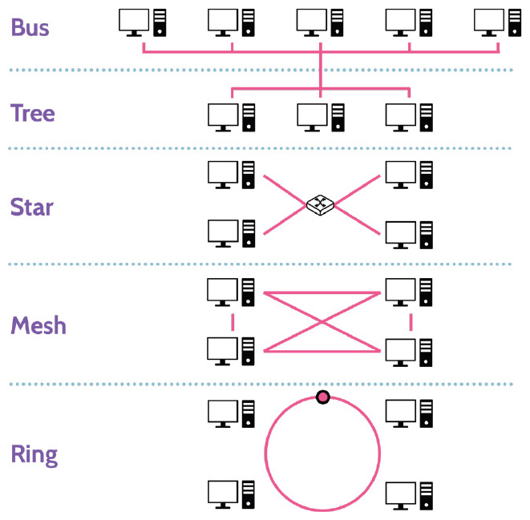
Figure 4-2: Network Topologies
A common network topology is known as a bus topology. Bus simply means all devices are connected to a central wire, called a bus. One great advantage of the bus topology is that the failure of one node does not affect the rest of the network; all other devices can still communicate with each other. So a bus topology allows for node failure. From a security point of view, a bus topology has several weaknesses. For one, the bus represents a single point of failure. For another, all devices are connected to a single wire, so by default every device can intercept all the information being transmitted across the wire. These transmissions are known as broadcasts. As the network grows, adding more devices to the network is as simple as extending the bus, but doing so leads to an issue known as attenuation. Attenuation is a loss of signal strength over distance, but this can be mitigated using signal boosters and repeaters. Looking back at broadcasts for a moment, another disadvantage of a bus topology is that when two or more devices send information at the same time, something called a collision can occur.
Another topology is known as a tree topology, which somewhat resembles a tree with different branches. By virtue of this structure, one of the immediate benefits is that transmissions can be isolated to certain branches of the tree, thereby limiting transmissions from being seen by the entire network. In addition, if any of the tree leaves become damaged or unavailable, the issue doesn't affect the whole network, as that node can be easily repaired or removed.
One of the benefits of these topologies is that they can be mixed and matched when building out networks. By doing so, functional and security needs can be achieved. This is one reason why a bus topology is the most implemented topology, because it easily supports other topologies and can be combined with them.
A star topology, as the name suggests, resembles a star. All devices are connected to a central device, like a switch or a hub. One significant disadvantage of a star topology is that the central device represents a single point of failure. If that device goes down, communication between all devices is effectively halted. However, if switches are being used, functionality exists that allows network segmentation to be implemented by connecting certain devices to certain ports. Segmentation allows a network to be segmented based on value, which leads to the creation of a more sophisticated network, as elements of a bus topology are expanded to include elements of other topologies, like tree and star. Though more complexity is introduced, additional functionality and security are added too.
A mesh topology interconnects every device with every other device. This is excellent for purposes of redundancy-if one device goes down, communication with other devices is not impacted. Mesh topologies can be implemented as full (where every device is connected to every other device) or partial (where only the most critical devices are connected to each other for purposes of redundancy).
A ring topology looks like a ring. Devices are connected to a closed loop, and in a sense the loop is still essentially a bus, which can lead to issues like collisions. However, particular ring topology implementations (like a token ring) can include a mechanism called a token that is designed to prevent collisions. The token is passed around the ring from device to device, and when the token is in possession of a device, the device can send information. This approach mitigates the issue of collisions, but it also introduces one particular problem, which led to the demise of token ring networks. Namely, if any node in the ring went down, it prevented the token from being passed to the next node. The direction of travel of the token could be reversed, but the problem of one node impacting the entire network remained. That's why specific implementations use a redundant ring, which can replace the primary ring in the event it becomes unavailable.
Topologies can be either physical or logical, with physical topologies dictating how devices are physically linked and how they communicate over these physical connections. Logical topologies define how data actually flows within the network, regardless of the physical layout. The important thing to note is that even though a network may physically have a star topology, logically, it could actually function as a bus, with all communications being broadcast to all nodes.
The data plane is the doer. It's what does the work of transferring packets across the network based upon directions from the control plane. The control plane is the intelligence that tells the data plane what to do. Above this is the management plane, which manages and monitors the network's operations.
Cut-through involves a switch starting to forward a packet as soon as it reads the destination address, without waiting for the entire packet to be received. It reduces latency and but does not allow error checking for the entire packet.
Store-and-forward involves a switch waiting until it receives the entire packet. It then checks it for errors before forwarding it on to its destination. This process adds latency but ensures that the packet is error-free prior to forwarding.
Dealing with Collisions
As described, being able to mix and match different topologies can provide significant functionality and security benefits. However, one of the major problems found in all the topologies except token ring is collisions. Three primary methods exist to handle collisions.
1. Token-based collision avoidance: A token is passed from device to device, and only the device holding the token can transmit information. This is what token ring networks use.
2. Polling: Interconnected devices poll each other to learn if any information needs to be transmitted. This method obviously implies a significant amount of network traffic, which explains why it is not popular or used often, if at all.
3. Carrier Sense Multiple Access (CSMA): Modern networks use what's known as Carrier-Sense Multiple Access. Devices are connected to the same carrier, the same wire, and therefore each device can sense the wire to identify if another device is transmitting. To send information, the wire must be available, and devices can sense this availability based upon what travels across the wire-voltage. Voltage represents 1s and 0s. +5 volts = 1 and -5 volts = 0. To send information, no voltage should be on the wire. Once the wire is free, data can be transmitted, which should then be acknowledged by the receiving device. If the acknowledgment comes back in a reasonable amount of time, everything is okay. If not, information might need to be resent.
Even with CSMA, collisions are still going to occur. For example, in the case of a wireless network, there's no media to sense if there's someone already transmitting, which makes it rather difficult to use. In addition, CSMA tends to require larger transmission times due to its operation and as such can cause delays. This is why two flavors of CSMA exist-CSMA with Collision Avoidance (CSMA/CA) and CSMA with collision detection (CSMA/CD). CSMA/CA completely avoids collisions. CSMA/CA is used in the context of wireless networks and employs the use of two lanes of communication. One lane is used to receive information, and the other is used to send information. When a device communicates with a wireless access point, CSMA/CA is used.
Wired networks, like Ethernet networks, used to use the other flavor of CSMA. That's CSMA/CD - Collision Detection, which detects collisions after information has been transmitted. CSMA-CD was popular in the past when Ethernet used twisted pair cables that needed hubs and repeaters. Modern Ethernet uses switches in full duplex mode, which avoids collisions, so we don't use CSMA/CD much anymore.
To understand how CSMA/CD works, think about it this way: when data is transmitted, voltage is running across the wire. If there's a spike in voltage after transmission, it means a collision has likely occurred. Thus, the information that was just transmitted would likely need to be sent again
The CSMA/CD process for sending frames is as follows:
1. Before sending a frame, it detects whether the line is idle. If it is, it sends the frame. If it isn't, it waits until the line is ready.
2. When it sends frames, it monitors transmissions for collisions. If a collision is detected, it sends a jam signal instead of the frames. It then waits for a random period of time so that the receivers can detect the collision.
3. It then resumes transmission.
Transmission Methods
As a quick review, a network is two or more devices that are connected to each other. How these devices communicate is through transmission methods. One method is one-to-one, which is called unicast and is used when a specific device needs to be reached. Another method is one-to-many, which is called multicast and is used when a group of devices need to be reached. The final method, broadcast, is one-to-all and is used when all the devices, e.g., on a specific subnet, need to be reached. From a security perspective, unicast is the most secure method, because communication is limited to a specific destination device.
In addition, Table 4-4 contains a summary of the various transmission methods that can be used to communicate.
|
Unicast |
Multicast |
Broadcast |
Anycast |
|
One-to-One |
One-to-Many |
One-to-All |
Nearest or Best |
Table 4-4: Transmission Methods
Let's dig a little deeper into what "anycast" means. Anycast is an addressing and routing method where incoming requests can be sent to any, or a variety of locations, depending on what the objective is. A good example of where anycast transmissions would be ideal is a CDN. A content distribution network (CDN) is a tool for getting data as physically close to the user as possible. In this context, anycast transmission technologies help you connect to the server that is closest to you, as opposed to one on the other side of the planet. Anycast also allows you to connect to the server that offers the best performance or the best security.
Another important transmission method is geocast. It involves delivering messages to nodes in a specific geographical region.
Performance Metrics
Table 4-5 runs through some key performance metrics that you should be aware of.
|
Bandwidth |
The maximum amount of data that can be transmitted over a network or internet connection in a given amount of time. |
|
Throughput |
The actual rate of successful data transfer achieved, measured over a period of time. Note that bandwidth is the maximum amount, while throughput is the actual amount. |
|
Signal-to-noise ratio |
The level of the desired signal in comparison with the amount of background noise. A higher signal-to-noise ratio can allow for higher data transfer rates, because it means that there is less chance of lost packets and corrupt data. |
|
Latency |
The amount of time it takes for a signal to travel from its source to its destination and back. It's the time it takes for a round trip, measured in milliseconds. |
|
Jitter |
The variation in time delay between data packets over a network. It is a measure of the inconsistency of latency over time, measured in milliseconds. Ideally, we want consistent latency, so we want low jitter. |
Table 4-5: Key Performance Metrics
Traffic Flows
It's important to understand two types of data center traffic flow. We explain both north-south and east-west traffic in Table 4-6 and Figure 4-3.
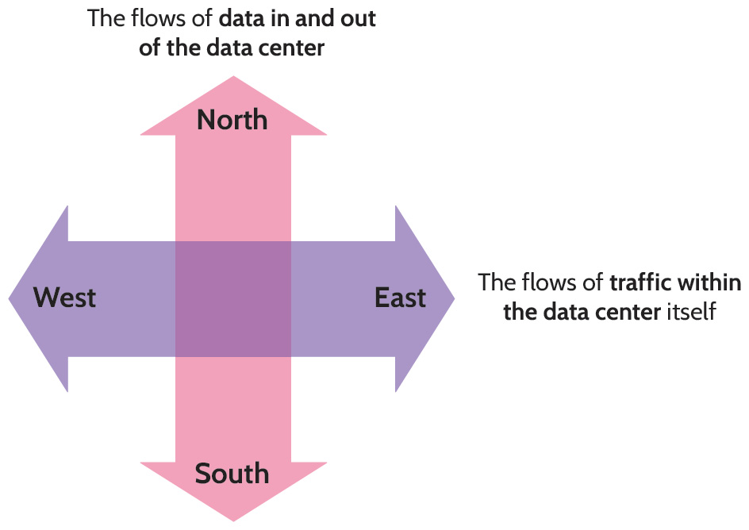
Figure 4-3: A Diagram of North-South and East-West Traffic Flows
|
North-south traffic |
The flows of data in and out of the data center. Traffic sent to the data center's servers from clients on the Internet is considered southbound, while traffic from the data center's servers to the clients is considered northbound. |
|
East-west traffic |
East-west traffic is data moving between devices within a data center. |
Table 4-6: North-south and East-west Traffic Flows
The differences between the two are critical, especially when making decisions about network architecture. The traffic pattern can impact the choice of topology, routing protocols, and security strategies.
Physical Segmentation
Physical segmentation involves creating a physically separate network or network segment. It can be useful for things like isolating network segments from one another. If we choose to physically segment a network, it can have impacts on how we manage the devices on it. Table 4-7 runs through some of the different options.
|
In-band management |
In-band management does not involve any physical segmentation. It involves managing network devices through the same network that is used to transmit user or application data. The lack of physical segmentation makes it a less secure option. Let's take the management of a switch as an example of in-band management. If you connect to and administer the switch via the same network that transmits user traffic, then this is considered in-band management. |
|
Out-of-band management |
Out-of-band management contrasts with in-band management because it involves a separate network. Network devices are managed from a dedicated network that is separate from the main network over which user traffic travels. Due to this separate network out-of-band management is considered more secure. |
|
Air-gapped management |
Air-gapped networks are an extreme form of segmentation that involves physically isolating a network from all others. This is the most secure approach, but having a completely isolated networks also introduces a bunch of limitations. To manage an air-gapped network, someone will have to be physically onsite to log in to it, because air-gapped networks are inaccessible from other networks. We tend to air-gap networks that contain important and sensitive systems, such as industrial control systems |
Table 4-7: Management and Segmentation
Logical Segmentation
We can use logical segmentation in a number of different ways. This is often cheaper, easier, and more flexible than physical segmentation. However, if we don't use logical isolation properly, the network may not actually be truly isolated. We outline some logical networking concepts in Table 4-8.
|
Virtual local area networks (VLANs) |
Through VLANs, a single physical network can be logically partitioned into multiple smaller networks. We discuss VLANs in more depth in section 4.1.15 |
|
Virtual private networks (VPNs) |
VPNs allow you to securely connect to a private network across public network infrastructure. We often use VPNs to connect an organization's different offices, and to connect remote users to the main network. We discuss VPNs in more depth in section 4.3.1 |
|
Virtual routing and forwarding (VRF) |
VRF allows us to make many virtual networks with just a single network component. |
|
Virtual domains |
Virtual domains provide the ability to create multiple separate security domains within a single physical device. As an example, they allow you to create multiple virtual firewall instances on a single device. |
Table 4-8: Common Logical Networking Concepts
Monitoring and Management
Monitoring and management are critical for ensuring the performance, availability and reliability of systems, services and networks.
|
Network observability |
This refers to the ability to gain insights and understanding into a network and its internal workings. |
|
Traffic flow and shaping |
Traffic shaping involves controlling packets and their movement within a network. We use it to enforce policies, optimize performance, and prioritize important traffic. As an example, corporate networks often prioritize VoIP traffic so that employees can be heard clearly during calls. |
|
Capacity management |
This involves monitoring current network resource usage and planning for the future. We want to ensure that we can meet demands both now and in the future. In the cloud, we have rapid elasticity, which can help reduce the complications associated with capacity monitoring. |
|
Fault detection and handling |
Fault detection and handling is the process of identifying, diagnosing and handling issues in an appropriate manner. We often use manual intervention, automatic remediation, incident response and other processes. |
Table 4-9: Important Monitoring and Management Concepts
Layer 1 Devices
Several important devices operate at Layer 1, among them hubs, repeaters, and concentrators. Because they operate at Layer 1, they're very fast, but they're also not considered intelligent devices, as they don't possess any decision-making abilities. Table 4-10 contains a list of all of those.
|
Hubs |
A hub is a Physical layer device with multiple ports and is used to connect multiple devices in a network. A hub is a very simplistic, passive device, which receives a data frame at one port and broadcasts that to all the other ports on the hub. Hubs are very "noisy" as a result, and data collisions often occur since they are a part of the same collision domain. |
|
Repeaters |
A repeater is a Physical layer device that is sometimes referred to as a signal booster and is often used to mitigate the issue of signal attenuation when data is being transmitted over a long distance. A repeater regenerates the signal and then sends it along to the destination. |
|
Concentrators |
Concentrators are like hubs in that both devices deal with multiple signals. However, while hubs repeat signals to all connected devices, concentrators combine all signals for transmission down a single line-they concentrate signals together. |
Table 4-10: Layer 1 Network Devices
4.1.3 Layer 2: Data Link
CORE CONCEPTS |
|
|
|
|
|
|
Looking at the OSI model, Layer 2-the Data Link layer-acts as a conduit between Layer 1-the Physical layer-and Layer 3-the Network layer. The Physical layer only works with bits, and the Network layer works with packets. Between them, the Data Link layer takes packets from the Network layer and formats them in a manner that allows the Physical layer to work with them as bits. Likewise, the Data Link layer takes bits from the Physical layer and formats them in a manner that allows the Network layer to work with them as packets.
Physical Addressing
Layer 2 is also the layer where devices that operate across a network are physically and uniquely identified and separated from each other. This makes sense, because for a network to work, the devices on it need to have unique physical addresses. This unique physical address exists and is known as a Media Access Control (MAC) address. A MAC address is simply bits-0s and 1s-that uniquely identify and distinguish every device on a network, and this unique identifier is specified via a device's network card. To ensure unique MAC addresses, an industry standard was adopted that specifies that each address should comprise 48 bits of information, with the first set of bits being specific to the vendor (first 24 bits or 3 bytes, which constitute the Organizational Unique Identifier, OUI), and the remaining bits (last 24 bits or 3 bytes) being specific to the device and assigned by its manufacturer, as shown in Figure 4-4. Note that, based on this information, duplicate MAC addresses should never exist under normal circumstances.
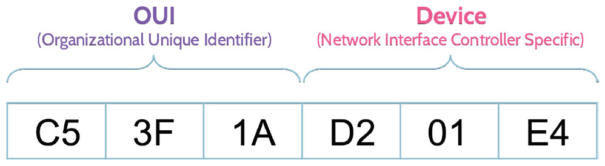
Figure 4-4: MAC Address
Networks work by virtue of logical address schemes that facilitate communication between devices. This is done at Layer 3 and is known as IP addressing, which can take IP addresses and convert them to MAC addresses and vice versa. Specifically, two protocols handle these needs: Address Resolution Protocol (ARP) and Reverse Address Resolution Protocol (RARP). ARP allows IP addresses to be mapped to physical addresses, while RARP allows physical addresses to be mapped to IP addresses.
ARP poisoning is a topic that will be examined in more detail later, but it's good to introduce now. ARP poisoning is a spoofing or masquerading type of attack, where one or more devices on a network pretend to be other, legitimate devices. Then information intended for a legitimate device will be sent to the device masquerading as the legitimate one. ARP poisoning can be accomplished quite simply, because every device contains an ARP table, which facilitates request resolutions. The ARP table can be modified to point to a rogue device, thus spoofing and masquerading the legitimate device. DNS, routers, and switches all use tables as well and could therefore be subject to unauthorized modification too.
In networking, there are two types of network communications that mainly exist: circuit-switched and packet-switched networks.
Circuit-Switched Network
A great example of a circuit-switched network is the Public Switched Telephone Network (PSTN), which has been in existence for many, many years. Connecting across the PSTN requires another person's telephone number, which can then be dialed, and a series of devices that comprise the PSTN will establish the circuit-the connection, as shown in Figure 4-5. Thus, the name circuit-switched network. Parties on each end of the circuit can speak and hear at the same time, which illustrates the fact that full-duplex transmission is in place. With a circuit-switched network, a connection is established permanently or on demand and is maintained between switches in order to route traffic to the correct destination.
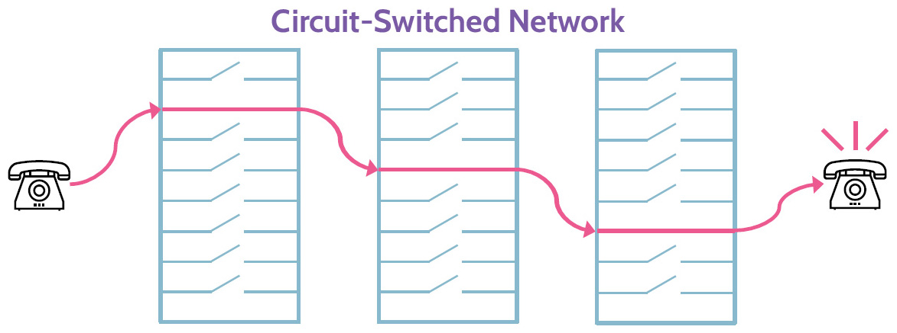
Figure 4-5: Circuit-Switched Network
Transmission of Digital Data over Analog Connections
When telephone communication was first being envisioned, scientists and engineers determined that because the human voice is analog, analog frequencies should be used for telephone communication. However, as technology advanced and data demands grew, the need for better communication technology also increased. Data doesn't travel well over analog frequencies, though a temporary fix came in the form of modems. A modem, which stands for modulator/demodulator, takes data and converts it to analog, so that it can be transmitted across the analog telephone network. Once it arrives at its destination, the analog signal is converted back to data by the receiving modem as depicted in Figure 4-6. As was already noted, data does not travel well across analog networks, and part of the issue lies in the fact that regardless of the surrounding technology, communication speed over analog networks is limited to 65,000 bits per second. This explains why separate data networks were built, including the global network known as the internet. Data networks were built for speed and bandwidth, and it wasn't long before voice communications using data transmission was perfected. We know this as Voice over IP, or VoIP or IP telephony, which encapsulates the internet protocol to enable transmission of digital data over analog connections. Though the ability to do telephony across data networks offers several advantages, it also presents a number of security risks.
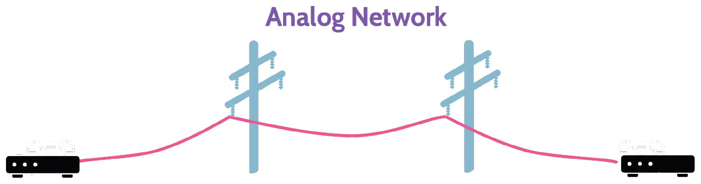
Figure 4-6: Modem Operation
Packet-Switched Network
Packet-switched networks function by taking data that needs to be communicated from one device to another and breaking it into packets. Each data packet contains information, such as addresses and sequence numbers. As Figure 4-7 illustrates, the packets may travel along different routes to the final destination, and they might even arrive in a different order than how they were sent. Switches switch the packets to the final destination, based on the header information and network conditions. Some datagrams might not even arrive, as there is no guarantee of delivery with data networks.
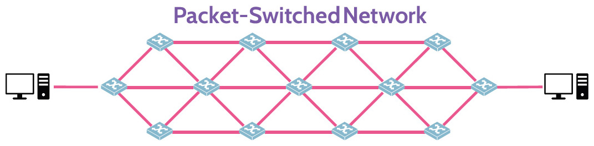
Figure 4-7: Packet-Switched Network
Layer 2 Protocols
Table 4-11 outlines Layer 2 protocols that are of the TCP/IP family of protocols. The first three are tunneling protocols, which are required to create virtual private networks (VPN), which are encrypted tunnels.
|
L2F |
Layer 2 Forwarding tunneling protocol |
|
PPTP |
Point-to-Point Tunneling Protocol. Uses three distinctive authentication protocols: 1. Password Authentication Protocol (PAP): Simplest but least secure of the three. Uses a static plaintext password for authentication. 2. Challenge Handshake Authentication Protocol (CHAP): More secure than PAP, as password is encrypted before being sent over the wire. 3. Extensible Authentication Protocol (EAP): Considered the most robust of the three due to its increased level of flexibility, allowing it to be combined with other protocols. |
|
L2TP |
Layer 2 Tunneling Protocol |
|
SLIP |
Serial Line Internet Protocol-an older protocol used for remote access via serial ports and modem connections |
|
ARP IP to MAC |
Address Resolution Protocol-used to map IP addresses to MAC addresses |
|
RARP MAC to IP |
Reverse ARP-used to map MAC addresses to IP address |
Table 4-11: Layer 2 Protocols
Layer 2 Devices
Significant devices that operate at Layer 2 are bridges and switches, as also depicted in Table 4-12. Like Layer 1 devices, Layer 2 devices are efficient and fast, with just a bit more functionality, like for example the ability to form VPNs. Switches have a bit more functionality, because they have ports that can be used to create network segments.
|
Bridges |
Connect different networks together, with no concern for what traffic is going across the bridge |
|
Switches (Layer 2 switches) |
Connect multiple network devices together. A frame sent to the switch is forwarded only to the intended recipient, based on the destination MAC address in the frame header. There are also switches that can operate and do certain functions at other layers, for example, there are also Layer 3 switches. One important note to remember is that exam questions will be very specific as to whether they are talking about regular switches that operate at L2, or L3 switches. |
Table 4-12: Layer 2 Network Devices
4.1.4 Authentication Protocols
CORE CONCEPTS |
|
|
Understand the basic difference between PPP, PAP, CHAP, and EAP
To understand the topic of authentication protocols, it's important to understand a bit about how the need came to be. Not too long ago, the only way for an organization to host remote access was with the use of modems. Larger organizations would typically have modem banks-a bunch of modems in a room, connected to the network. Employees would dial a phone number, and if a modem was available, a remote connection to the network could be made. Of course, this was before the internet grew to what it is today, and VPN solutions became the rule rather than the exception. So, the PSTN was used and a protocol that allowed TCP/IP to run across dial-up networks needed to be created. This led to Serial Line Internet Protocol (SLIP) being developed. Though SLIP worked, it didn't work well, and as remote access grew in popularity, a better protocol called Point-to-Point Protocol (PPP) replaced it.
PPP is a Layer 2 protocol that is used to allow remote access, typically via VPN solutions today. With the advent of PPP and knowing that remote communication most often supported people, the creators of PPP determined that including authentication protocols made sense. As a result, three authentication protocols were developed and supported as part of PPP-PAP, CHAP, and EAP-with each protocol achieving different levels of popularity and each offering different degrees of functionality and security. These are depicted in Figure 4-8. Even though we are discussing the PPP protocol as the basis for remote access, these authentication protocols (PAP, CHAP, EAP) are actually operating at OSI Layer 5. This might be confusing to understand, but if we remember that in order for communications to happen as per the OSI model, all layers need to work together, and certain things, like authentication, need to be done at the higher layers.
Password Authentication Protocol (PAP) simply prompts for a user ID and password when establishing a connection. Sadly, passwords are transmitted in plaintext, and the user will never be prompted to change their password, as it will be static in nature.
As a result of the issues with PAP, Challenge Handshake Authentication Protocol (CHAP) came to the foreground. CHAP is an improved version of PAP. Passwords are encrypted during transmission, while challenges are sent in regular intervals behind the scenes to ensure that an intruder has not hijacked or otherwise compromised a session.
The most robust and flexible authentication protocol of the three is Extensible Authentication Protocol (EAP). The word extensible means being able to be extended or designed to allow new capabilities and functionality to be added. EAP allows vendors to adapt the latest authentication technologies, like smart keys and digital certificates, to their products. In fact, due to its inherent strengths, EAP can also be embedded into other things, like wireless security, where it's used with WPA2 for purposes of connecting to wireless networks and authenticating users at the same time.
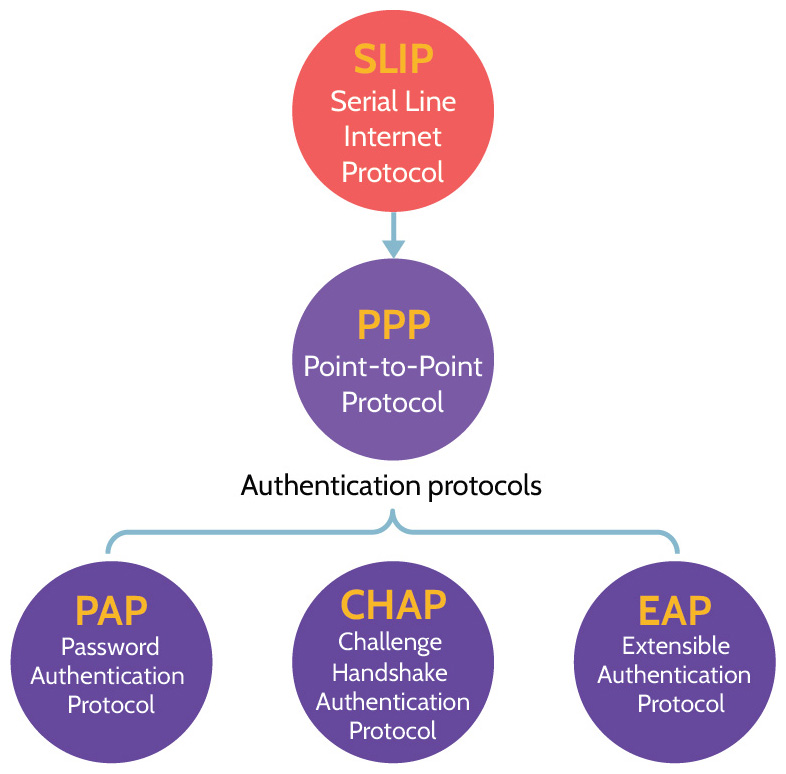
Figure 4-8: SLIP and PPP Protocols
Protected Extensible Authentication Protocol (PEAP)
What differentiates PEAP from EAP?
Note that PEAP is a more improved version of EAP, as it encapsulates EAP within an encrypted and authenticated TLS tunnel as seen in Figure 4-9. A comparison between the most common types of EAP can be seen in Table 4-13.
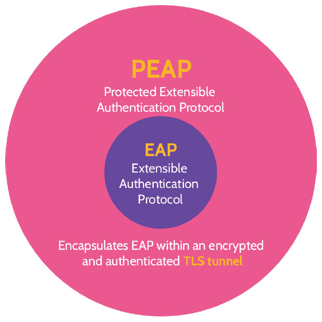
Figure 4-9: PEAP
Understand what type of authentication (client, server, or both) each type of EAP provides
|
Type |
Client Authentication |
Server Authentication |
Security |
Industry Support |
Proprietary |
|
EAP-TLS |
Certificate |
Certificate |
High |
High |
No |
|
EAP-TTLS |
ID & Password |
Certificate |
Medium |
Medium |
Yes (Funk Software & Certicom) |
|
EAP-PEAP |
ID & Password |
Certificate |
Medium |
High |
Yes (Cisco, RSA, & Microsoft) |
|
LEAP |
ID & Password |
ID & Password |
Low |
High |
Yes (Cisco) |
|
EAP-MD5 |
ID & Password |
- |
Low |
Low |
No |
Table 4-13: EAP Types
4.1.5 Layer 3: Network
CORE CONCEPTS |
|
|
|
|
|
The Network layer handles two very basic but important responsibilities-fragmentation and IP addressing. Fragmentation provides the ability to take data and break it up into packets-chunks of data-and then allow those packets to be delivered to their destination via IP addressing. The IP protocol within TCP/IP specifically handles most of the responsibilities found at the Network layer. In this context, ARP and RARP are heavily relied upon. If data is leaving the network, the sending device's MAC address is mapped to an IP address; if data is entering the network, the IP address is mapped to the receiving device's MAC address.
Layer 3 Protocols
Layer 3 is home to several significant protocols that are part of the family of protocols within the suite of TCP/IP protocols. Layer 3 protocols include IP, IGMP, and IPsec, as well as routing protocols like BGP, OSPF, and RIP. Some of these protocols are discussed in Table 4-14.
|
ICMP |
Internet Control Message Protocol is used for messaging and specifically provides feedback about problems in the network communication environment. Ping and traceroute are two important commands that utilize ICMP. Ping attempts to see if a host device is reachable; traceroute tries to map the path of traffic. Together or alone, both command tools can provide significant information about a network. |
|
IGMP |
Internet Group Management Protocol is used to establish and manage group memberships for hosts, routers, and similar devices. |
|
IPsec |
IPsec is a tunneling protocol that supports authentication of other Layer 3 devices as well as encryption. It's discussed in more detail in section 4.3.2. |
|
OSPF |
Open Shortest Path First is a routing protocol used by routers to manage and direct network traffic properly and efficiently. OSPF includes security features that make it a more secure routing protocol than others. |
Table 4-14: Layer 3 Network Protocols
Internet Group Management Protocol (IGMP) is used to establish and manage group memberships for hosts, routers, and similar devices. One important thing to note is that authentication in this context does not mean access control authentication. Rather, it refers to authentication of other devices that operate at Layer 3, like routers and Layer 3 switches.
Routers are the most important devices that operate at Layer 3. They route data based on information included in the header portion of the packet, and those routing decisions are based upon a routing protocol. A routing protocol is simply a language and set of rules that routers understand and use to make decisions about routing. Border Gateway Protocol (BGP), Open Shortest Path First (OSPF), and Routing Internet Protocol (RIP) are common routing protocols.
What protocol is often used to quickly determine if network communication problems exist?
In addition to the Layer 3 protocols mentioned above, Internet Control Message Protocol (ICMP) is another very significant Layer 3 protocol. ICMP is used for the messaging aspects of networking and acts as a helper protocol by facilitating reporting issues over ICMP messages. For example, an ICMP "destination host unreachable" message denotes that the packet destination couldn't be reached. However, note that ICMP can also be used maliciously. An attacker can use the ping utility to identify if a host is "alive" and reachable in any given network. Traceroute is a utility that maps the hosts between a source and destination and provides the traffic path taken. Both commands are often utilized as part of the reconnaissance phase of an attack, and this explains why it is standard practice for organizations to filter incoming ICMP packets at the firewall.
Layer 3 Devices
Several significant devices operate at the Network layer, Layer 3. The most obvious are routers, but Layer 3 switches can also be found at the Network layer. In relation to the exam, unless a question specifically mentions a Layer 3 switch, assume that this refers to a Layer 2 device.
In addition to routers and Layer 3 switches, packet filtering firewalls also operate at Layer 3. Firewalls help protect networks from a number of different types of unwanted traffic, and they can operate at three of the seven layers of the OSI model. As was previously mentioned, the speed and efficiency of devices is inversely proportional to their intelligence as you go up the OSI model. Layer 3 firewalls are still fast, but they possess only limited decision-making capabilities. In fact, Layer 3 firewalls are only able to interpret the header portion of a packet. Simple concepts like source and destination IP addresses and ports (which equate to services) can be used to make decisions. If source IP addresses from certain countries are listed as malicious, the packet filtering firewall can be instructed to drop the packet and not allow it to traverse the network. Additional intelligence exists in firewalls operating at higher OSI layers (like the Application layer, where application proxy firewalls can filter traffic based upon web content, deep packet inspection, stateful inspection, antivirus, intrusion detection signatures, and so on). Of course, this increased intelligence and functionality comes with a price: slower processing speed and increased device cost. Table 4-15 contains an indicative summary of Layer 3 network devices.
|
Packet Filtering Firewalls |
Devices that make decisions based upon the header portion of a packet, such as the source and destination IP addresses. Due to low processing overhead, they are very fast. |
|
Routers |
Devices that connect and route network traffic between networks, based upon IP information included in received data packets. Routers utilize routing protocols and typically dynamically maintain routing tables to determine the optimal route for data packet forwarding. |
|
Switches (Layer 3 switches) |
Layer 3 switches function very similarly to routers and are often used to connect devices on the same virtual local area network (VLAN). |
Table 4-15: Layer 3 Network Devices
Know what layer routers operate at and what layers routers operate between
4.1.6 Logical Addressing
CORE CONCEPTS |
|
|
|
|
IPv4 addresses are comprised of four numbers separated by dots, e.g., 192.168.1.254. The IP address is a 32-bit value, and each number represents an 8-bit octet. The valid range for each of them is 0-255, with .0 used to denote a specific network, e.g., 192.168.1.0, and .255 to denote a network's broadcast address.
Each packet header contains routing details, like source and destination IP addresses. These fields can each hold 32 bits of information, which are divided into four groups of 8 bits (known as bytes). This is why IPv4 addresses consist of four decimal numbers. If every bit in a given octet is turned on, the highest number that can be achieved is 255. This fact points to a limitation with IPv4 addresses-the highest number in any octet can only be 255.
With a bit of math, it can quickly be seen that the number of valid, unique 32-bit IP addresses is limited. In fact, the number is just under 4.3 billion-232. When this was originally put into production, no one imagined we would need more addresses. However, with the rapid expansion of the internet and our need to be constantly connected, the IPv4 address space quickly wasn't enough. To allow for better addressing consumption and management, Network Address Translation (NAT) came into effect. Take the example of your home network, which has a router provided commonly by your ISP. That router has a publicly known routable address, provided by your ISP, but when you connect multiple devices to your local network (like your internet TV, tablet, mobile phone, laptop, and others) they all get private addresses assigned to them. NAT is what your router uses to change all those internal IP addresses to that single publicly routable ISP address each time traffic leaves your network and is directed externally. The fact that internal IP addresses are changed is also a great security feature because it allows internal IP addressing schemes to be hidden. This prevents attackers from being able to easily perform reconnaissance and gather information about a potential target.
LAN Technologies
Institute of Electric and Electronic Engineers (IEEE) is an organization of very bright individuals who meet regularly to discuss and ratify technologies, especially new ones. Through the ratification process, standards and parameters can be stipulated, resulting in uniformity and use of the technologies by vendors. For example, different Wi-Fi standards and parameters are defined by the IEEE 802.11 family of standards, which over time grew from 802.11 to 802.11a, b, and g. Then n, ac and ad came along, and now (at the time of writing) 802.11ax is at the helm. The next version of the standard, IEEE 802.11be, is expected to be approved toward the end of 2024. Table 4-16 summarizes three common IEEE standards from the 802 family.
|
Wired |
Wireless |
Virtual LAN (VLAN) |
|
IEEE 802.3 defines a collection of communication standards for physical connections on a wired, Ethernet network. |
IEEE 802.11 is a collection of communication standards specific to the implementation of WLAN communication. |
IEEE 802.1Q defines the standard for virtual local area networks. VLANs are used to create isolated networks for purposes of security and to minimize broadcast traffic on a network. |
Table 4-16: LAN Technologies
Internet Protocol (IP)
IP is the principal communications protocol for addressing and routing packets of data, so that they can travel across networks and arrive at the correct destination.
Internet Protocol v4
Figure 4-10 depicts the IPv4 header. As can be seen, several fields besides the source and destination IP addresses exist in it. The significance here is the 32-bit source IP address and the 32-bit destination IP address, which means IPv4 is limited to a maximum number of 4.3 billion IP addresses. NAT, discussed earlier, mitigated the issue of IP addresses running out while experts in the industry who recognized the onrushing problem developed IPv6.
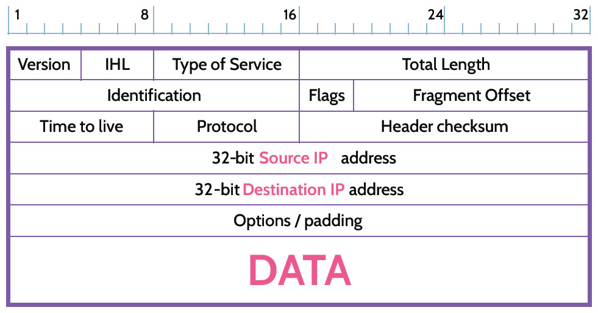
Figure 4-10: IPv4 Header
Internet Protocol v6
IPv6 (shown in Figure 4-11) expands IP addressing to 128 bits, and using the same math noted with regards to IPv4 points to the IPv6 address space being significantly larger-staggeringly so-as 2128 is a very big number. Additionally, unlike the four decimal numbers separated by dots that represent IPv4 addresses, an IPv6 address is represented in hexadecimal format, with each group separated by colons.
One benefit of IPv6 is backward compatibility, which explains why some organizations are still using IPv4 at the same time as they move to incorporate IPv6 more fully into their networking environment. At some point, all organizations will only be using IPv6, and experts have predicted that the IPv6 address space will never be exhausted. But they likely said the same thing about IPv4.
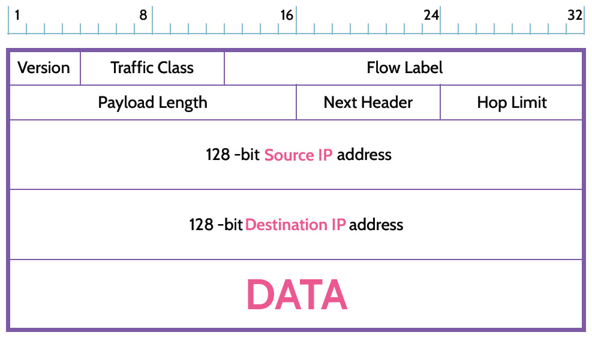
Figure 4-11: IPv6 Header
IPv4 versus IPv6
Why IPv6 was created
Table 4-17 contains a comparison between IPv4 and IPv6. Back in the day, nobody ever imagined the need for IP addresses would grow the way it did. With the introduction of IPv6, hopefully the need for IP addresses will never be exceeded again. One other thing that's important to note is that security, in the form of the protocol IPsec, is supported in implementations of IPv6.
|
IPv4 |
IPv6 |
|
Address Size |
32-bit (4 bytes) |
128-bit (16 bytes) |
|
Address space |
232 = 4,294,967,296 |
2128 = 340,282,366,920,938,463,463,374,607,431,768,211,456 |
|
Address format (example) |
10.0.0.1 |
0000:0000:0000:0000:0000:ffff:0a00:0001 |
|
IPsec |
Supported |
Supported |
Table 4-17: IPv4 and IPv6 Comparison
Private IPv4 Addresses
Earlier, when NAT was mentioned, the concepts of public and private IP addresses were also discussed. Unlike public IP addresses, private addresses may be used by any organization or individual and are commonly used for local area networks in the context of large and small organization network environments as well as in home networks. Private IP addresses are non-routable, which means their use within corporate or home networks provides a layer of security between public-facing internet devices and internal devices. In fact, because private IP addresses are non-routable, two businesses next door to one another could use the exact same private IP range for their internal networks. And using NAT, conceivably an organization with thousands of computers and peripherals could connect to the internet through a single router configured with one public IP address. Table 4-18 lists the private IPv4 IP address ranges (according to RFC 1918), which are not to be used on public networks (like the internet).
|
From |
To |
|
10.0.0.0 |
10.255.255.255 |
|
172.16.0.0 |
172.31.255.255 |
|
192.168.0.0 |
192.168.255.255 |
Table 4-18: Private IPv4 Address Ranges (RFC 1918)
Be able to differentiate public IP address from private IP addresses
Network Classes (Subnetting)
In its simplest form, subnetting allows for the creation of networks with more logical host limits versus the limitations imposed by specific IP addressing classes. Looked at another way, if networks were limited to only Class A, B, or C ranges, every network would have only 254, 65,534, or 16+ million IP addresses for host devices, and these limitations could create huge inefficiencies, potential security issues, significant administrative overhead, and potential network-related performance and congestion issues. Through the use of subnetting, which reflects awareness of the current environment and planning for the future, the proper-size logical host environment can be architected and deployed and can mitigate many, if not all, of the issues noted. Table 4-19 summarizes the subnet classes and related IP address ranges. Neither the network address nor the broadcast address are included in the number of IP addresses, which is why each class is two addresses lower than you would expect from the math.
Know the maximum number of Class A, B, and C IP addresses
|
Exponent |
Result |
Number of Addresses |
|
Class A |
224 |
16,777,216 |
16,777,214 |
|
Class B |
216 |
65,536 |
65,534 |
|
Class C |
28 |
256 |
254 |
|
Class D |
Multicast address |
||
|
Class E |
Reserved |
||
Table 4-19: Subnet Classes and Related IP Address Ranges
4.1.7 Layer 4: Transport
CORE CONCEPTS |
|
|
|
|
TCP and UDP
As previously mentioned, Layer 4 (the Transport layer) is like a truck that transports information between devices. Delivery services can come in the form of reliable, ordered transmission (using TCP) or in unreliable, unordered transmission (using UDP). Many people refer to UDP as a "send and pray" protocol. This said, both protocols are still heavily relied upon, and each serves a purpose. For reliable, perhaps a bit slower, transmissions, TCP is the clear choice. However, UDP is fast, and for things like video streaming, which requires speed, as well as handling DNS requests, UDP is very efficient.
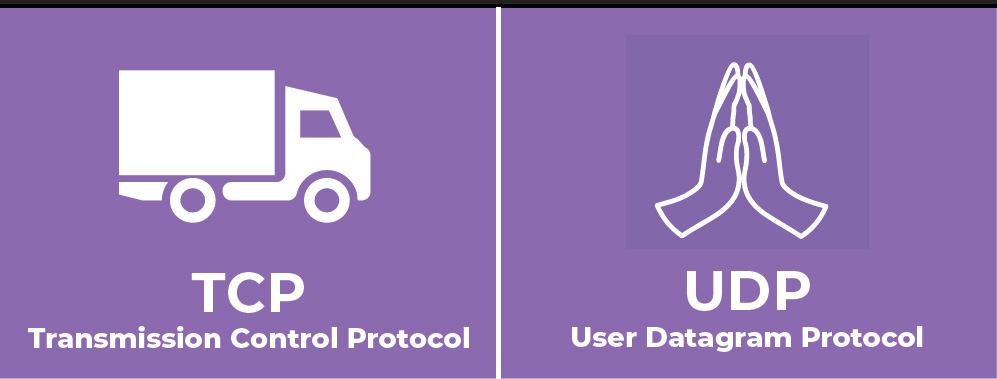
Table 4-20: TCP and UDP
TCP versus UDP Headers
Figure 4-12 illustrates the differences between UDP and TCP headers. As you can see, the UDP header contains much less information than the TCP header, which makes it much easier and faster to process. The additional information contained in the TCP header provides the reliability needed for certain applications, which, however, requires considerable processing time.
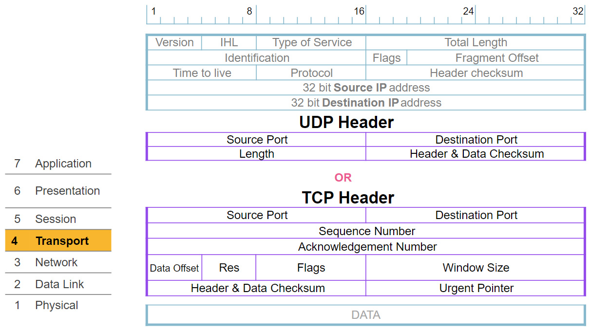
Figure 4-12: UDP and TCP Headers
TCP Three-Way Handshake
TCP provides reliable, ordered and sequenced transmissions. This reliability, however, comes at a cost. Looking back at the truck analogy, for this reliability to be realized, a road first needs to be built. What's known as the TCP three-way handshake is the building of the technological road to reliably connect hosts across a network. Let's examine this more closely through an example depicted in Figure 4-13.
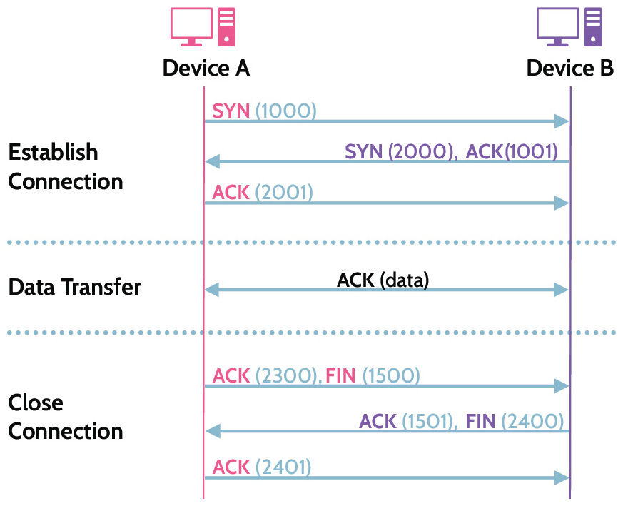
Figure 4-13: TCP Three-Way Handshake
Imagine two devices, A and B. Device A is initiating communication, and Device B is the receiving device. This is the sequence of steps that follows:
1. Device A first sends what's known as a synchronization (SYN) request along with a random session ID or synchronization number (in this case 1000). The session ID number is random to prevent an attacker from predicting the number, which if known could allow the session to be hijacked.
2. The receiving device is going to acknowledge the synchronization request by sending a packet with the ACK (acknowledge) flag set (in which it's going to increment the session ID it received in step #1 by one, making this 1001). In addition, because the goal is two-way communication, the receiving device will also send its own synchronize (SYN) request and random session ID number (in this example, 2000) to the initiating device. That means that the packet Device B sends in step #2, will have two flags set, SYN and ACK.
3. Device A sends a final packet with the ACK flag set, including an incremented session ID number (2001, which is incrementing the SYN value of 2000 that it received earlier by one). So the full final sequence is SYN, SYN - ACK, ACK.
Here's where the reliability of TCP comes in.
Each transmission must be acknowledged by the receiving device, and in the three earlier steps, a full-duplex connection is established; thus, the term three-way handshake. Communication in both directions can take place and all transmissions are acknowledged.
Additionally, the synchronization number allows each party to know that all data has been received. If a synchronization of 1000 is sent, the number received in reply should be 1001. If something other than 1001 is received, it means one or more packets are missing and retransmission would then be requested. This functionality further ensures the reliability for which TCP is known.
To close the connection, finish requests and acknowledgment of them takes place. That is done in a pair of FIN-ACK packets. If a graceful disconnection is to take place, Device A can send a FIN request, to which Device B would respond with an ACK. In the same regard, Device B may then send a FIN request, to which Device A would respond with an ACK. As such, we would have two pairs of FIN-ACK sequences to gracefully terminate the session.
For all its inherent advantages, the TCP three-way handshake can also be exploited for malicious purposes. Consider this example: When a synchronize request is received, the receiving device tries to acknowledge it by sending an ACK, and the session ID incremented by one. What if many synchronize requests from different hosts are arriving at the same time? Of course, the receiving device will attempt to acknowledge each request. However, if the requests are coming faster than can be handled, the receiving device's process or connection queue is going to fill up faster than it's emptying. Eventually, the queue is going to fill up, and the system may crash and/or become unresponsive. This is how a SYN flood attack works. To handle something like this, it's best to offload the processing of SYN requests and utilize hardware or software at the Application layer to handle the load. At the Application layer, some type of SYN proxy will be more intelligent and able to handle the incoming requests. It can determine very quickly that a SYN flood is present and simply drop the incoming requests, and the host continues to operate normally.
Ports
Ports equate to services, and services are small applications that provide specific functionality. For example, for the common web service, HTTP, port 80 is used by default. Some of the services associated with different ports are used quite extensively, while others are hardly used. Additionally, some of the most popular or most functional services are also the most often exploited services. Some examples of commonly used ports are denoted in Table 4-21.
|
20 |
File Transfer Protocol (FTP) data transfer port |
|
21 |
File Transfer Protocol (FTP) control port |
|
22 |
Secure Shell (SSH) (remote login protocol) |
|
23 |
Telnet (remote command line protocol) |
|
25 |
Simple Mail Transfer Protocol (SMTP) |
|
80 |
Hypertext Transfer Protocol (HTTP) |
|
443 |
Hypertext Transfer Protocol Secure (HTTPS) |
Table 4-21: Common TCP Ports
If a service is not needed, especially ones that are dangerous, the associated port should be closed, because attackers may abuse it. Techniques like packet filtering can be used to block packets that reference the associated ports in the header. The use of packet filtering in this sense is part of a process called hardening. In addition to using packet filtering, hardening might also involve shutting down services-effectively shutting down the ports-on host machines or within applications or architectures inside a network, because services in those contexts might also provide a communication channel that malicious actors can exploit. If security is needed across a network, hardening can be used to enforce the use of more secure versions of services, like HTTPS or SFTP, instead of HTTP and FTP (which are plaintext protocols). And in cases, where a service cannot be made more secure, a tunneling and encryption protocol like SSH can be used to protect the data transmission. Hardening focuses on security, whether through the removal of or disabling of services, blocking services, or applying patches and upgrades to address known vulnerabilities in an architecture or application.
Among the 65,536 available TCP and UDP ports, three classes exist, also shown in Figure 4-14:
1. Well known: Used by specific system services like HTTP, HTTPS, SMTP and similar ones
2. Registered: Internet Assigned Numbers Authority (IANA) assigned ports after a specific request is submitted (e.g., UDP 4244 used by the famous Viber, which is a VoIP application)
3. Dynamic/Private/Ephemeral: These high ports are dynamically assigned and are often used by applications and other services. For example, when a host machine sends a SYN request to initiate a connection, the source port might be something like 52,367.
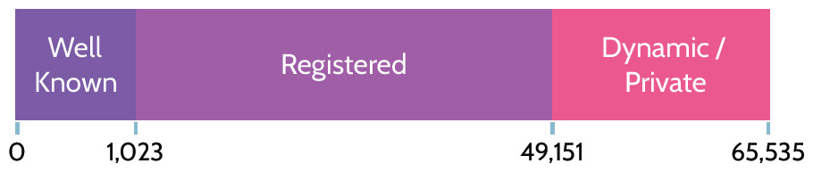
Figure 4-14: Port Ranges
Be familiar with port ranges and common ports and the services they provide
Layer 4 Protocols
Table 4-22 lists some of the most common Layer 4 protocols.
|
TCP |
Transmission Control Protocol-provides reliable, ordered, connection-oriented, sequenced services. The cost of TCP's reliability is speed; it's a slower protocol. When reliability is needed, TCP is the protocol of choice. |
|
UDP |
User Datagram Protocol-unreliable, "I'll try my best, but there are no guarantees ..." services. "Send and pray" is a phrase often attributed to UDP. UDP's unreliability also results in it being a much faster protocol. For streaming and for things like DNS requests, UDP is good. |
|
SSL/TLS |
Secure Socket Layer (SSL)/Transport Layer Security (TLS) are essentially the same thing-TLS is basically just the name for the later versions of SSL. SSL/TLS is the most used security protocol across the Internet, and it facilitates secure connections between, for example, a browser and a secure server located anywhere in the world. |
Table 4-22: Layer 4 Protocols
4.1.8 Layer 5: Session
CORE CONCEPTS |
|
|
|
|
|
Understand what happens at the Session layer
Layer 5 (the Session layer) is responsible for establishing and maintaining connections. It can perform functions like establishing, maintaining, synchronizing, and tearing down a connection.
Layer 5 Protocols
Some of the protocols in the table below have already been mentioned. PAP, CHAP, and EAP are the authentication protocols that support the PPP protocol found at Layer 2, which as you may remember facilitates remote connections that are ultimately established at Layer 5, the Session layer. RPC and NetBIOS are additional protocols found at Layer 5, and they also help facilitate remote access. These have been listed in Table 4-23, including the prementioned PAP, CHAP, and EAP as reminders.
|
PAP |
Password Authentication Protocol simply prompts for a user ID and password when establishing a connection. However, passwords are transmitted in plaintext, and the user will never be prompted to change their password as it will be static in nature. |
|
CHAP |
Challenge Handshake Authentication Protocol was developed because of PAP's vulnerabilities. CHAP is an improved version of PAP. Passwords are encrypted during transmission, and challenges are routinely sent behind the scene to ensure that an attacker has not replaced the original client. |
|
EAP |
The best authentication protocol is called Extensible Authentication Protocol. The word extensible means being able to be extended or designed to allow new capabilities and functionality to be added. With this understanding, EAP allows vendors to adapt the latest authentication technologies, like smart keys and digital certificates, to their products. In fact, due to its inherent strengths, EAP can also be embedded into other things, like wireless security, where it's used with WPA2 for purposes of connecting to wireless networks and authenticating users at the same time. |
|
NetBIOS |
Network Basic Input/Output System is a legacy communications protocol that allows computers within a local network to communicate with each other and with various peripheral devices, like file shares and printers. |
|
RPC |
Remote Procedure Call is a communications protocol that facilitates communications between clients and servers to execute procedures. |
Table 4-23: Layer 5 Protocols
Layer 5 Devices
The primary type of security device found at the Session layer is known as a circuit proxy firewall or gateway. Unlike other firewalls found at the Application layer, circuit proxy firewalls do not filter individual network packets; rather, they monitor and track traffic to determine if it is legitimate by inspecting TCP packet handshakes and sessions. One benefit of circuit proxy firewalls is that they hide details of an internal network from external users through the use of network address translation (NAT), so all outgoing traffic shows only the gateway IP address.
4.1.9 Layer 6: Presentation
CORE CONCEPTS |
|
|
|
Layer 6, the Presentation layer, focuses on the visual elements of data. It focuses on graphics, character conversions, codecs, and other elements that relate to how data is actually presented to users at the Application layer. Codecs are a particularly interesting topic in this context. Codecs are small software programs that enable different types of video files to be viewed on a computer. Users are usually alerted to the need for a codec by their multimedia application, at which point the user will use Google, for example, to search for, download, and install the codec. Unfortunately, malware writers often use codecs to deliver malicious software too, so consumers should be very careful to confirm that a given codec is free from malware.
Like modem standing for modulator/demodulator, codec stands for coder/decoder, or better, compression/decompression, that represent a multitude of ways that digital media is handled. Digital media often entails very large files, and delivering these large files from a media source to consumers requires significant bandwidth and some technical wizardry-like compression/decompression-to assist. This is where codecs came into play. However, because one codec standard was not adopted, a multitude of codecs were developed to support the multitude of video formats. As vendors wanted their video format to grow in popularity, supporting codecs were often made freely available and shared on the internet, and they became a hotbed of malware as a result. Today, content distribution networks (CDNs) handle the bulk of media distribution around the world. Vendors locate servers around the globe specifically to host things like YouTube videos closer to consumers.
4.1.10 Layer 7: Application
CORE CONCEPTS |
|
|
|
|
|
Be familiar with what happens at Layer 7
Layer 7 (the Application layer) is the layer where most functionality resides. For this reason, it's also the layer where most security breaches and attacks occur. Think about it: applications are created to provide functionality, and this often requires significant amounts of coding. In fact, this points to another CISSP domain that focuses entirely on software development and application security (Domain 8).
Layer 7: Protocols
Be familiar with common Layer 7 protocols and their uses
Among a number of protocols, or services, that run at the Application layer, those listed in Table 4-24 (along with their default ports) are some of the most popular. As can be seen, many of these protocols come in two versions: standard (HTTP) and secure (HTTPS).
|
HTTP/S |
Hypertext Transfer Protocol (HTTP) using TCP port 80 is essentially the language of the web and allows for communication between web browsers and web servers. However, it's not inherently secure. Thus, Hypertext Transfer Protocol Secure (HTTPS) using TCP port 443 was developed to meet the needs of situations where secure web communication is required. HTTPS incorporates SSL/TLS for purposes of tunneling and therefore protecting traffic from interception across the internet. |
|
FTP/FTPS/TFTP |
File Transfer Protocol (FTP) using TCP ports 20 and 21 is heavily utilized by companies, but it is also one of the most vulnerable services. Thus, a more secure version of FTP-Secure FTP (SFTP), also referred to as SSH FTP using TCP port 22-was developed, so companies can transmit and retrieve files securely. Note that Trivial File Transport Protocol (TFTP) using UDP port 69 is highly insecure, and most companies tend to ban and disable this service as a result. |
|
DNS/DNSSEC |
Domain Name Service (DNS) using TCP and UDP port 53 maps hostnames to IP addresses. Surprisingly, DNS includes very little built-in security, and an initiative has been under way for a number of years to better protect DNS services through the use of Secure DNS (DNSSEC). DNSSEC provides for better protection of DNS data itself, so it can't be easily spoofed or otherwise misused. |
|
Telnet |
Telnet (using TCP port 23) is one of several protocols that allows a user to remotely connect from one computer to another computer on the same network. As it stands, it's a very insecure protocol, and it's best used in conjunction with something like Secure Shell (SSH), which protects the transfer of data between devices. |
|
SSH |
Secure Shell (SSH) using TCP port 22 is a network protocol that utilizes public-key cryptography for purposes of secure connections to a remote computer. Some uses of SSH include login to a shell on a remote server, execution of commands on a remote host, and securing file transfer protocols, among many others. |
|
SMTP/POP3 |
Simple Mail Transport Protocol (SMTP) using TCP port 25 is the protocol used for sending email over the internet, while Post Office Protocol (POP3) using TCP over port 110 is the one used for receiving email. |
|
SNMP |
Simple Network Management Protocol (SNMP) using UDP ports 161 and 162 is a protocol most often used by network administrators to collect, organize, and manage information related to devices on a network. Over the years, SNMP has been revised, and earlier versions (1 and 2) are considered highly vulnerable. SNMPv3 is the latest and recommended version. |
Table 4-24: Layer 7 Protocols
Layer 7 Devices
Be familiar with common Layer 7 devices and their uses
Adding security at Layer 7 typically involves deploying gateways and firewalls. Essentially, a firewall can be a software or hardware solution and is used to filter traffic between two (or more) networks. A firewall can be as simple as a router that makes filtering decisions on packets based on an access control list, or it can be an extremely sophisticated, specifically purposed device that looks at traffic headers and/or payload to make complicated decisions. Two common Layer 7 devices are summarized in Table 4-25.
|
Gateways |
Gateways are simply connections between domains or networks. |
|
Firewalls |
At Layer 7, firewalls are known as application-proxy firewalls. At this layer, they're extremely sophisticated and therefore able to make the most informed and intelligent decisions. Because of this fact, application-proxy firewalls tend to have more processing overhead, and they're typically slower than firewalls found at lower layers. |
Table 4-25: Layer 7 Devices
4.1.11 Network Administrator
CORE CONCEPTS |
|
|
A network administrator, sometimes also referred to as system administrator, is usually a member of the IT department. Among their responsibilities, they help support information systems and resources and the CIA triad through proper
 Configuration of the network, servers, desktop and mobile computers, and other computing devices,
Configuration of the network, servers, desktop and mobile computers, and other computing devices,
Patch and software update management, and
Vulnerability management.
4.1.12 Convergence and Voice Over IP (VOIP)
CORE CONCEPTS |
|
|
|
|
Convergence
In recent years, data networks have been tasked with carrying multiple types of traffic in addition to data traffic. Now it's very common for a network to carry data, voice, multimedia, and other types of traffic. This ability is referred to as IP convergence, as depicted in Figure 4-15.
Recall the earlier discussion about SCADA and ICS. Typically, those systems use non-IP means of communication, which then requires their traffic to be tunneled across IP networks. This points to IP convergence or the ability of native IP networks to carry much more than only IP data. For example, telephony is not a native part of an IP network. IP telephony requires data networks to be able to support IP telephony protocols like H.323 and SIP. This is IP convergence.
From a security perspective, functionality is being added to the basic requirements of a data network, and anytime functionality is added, more potential vulnerabilities and security concerns are also added.
Important converged protocols include Fibre Channel over Ethernet (FCoE), Internet Small Computer Systems Interface (iSCSI), and Voice over IP (VoIP).
Each type of converged protocol serves a purpose, but because data networks do not include native security, carrying a different protocol across a data network poses risks. If confidentiality is a need, encryption can be used, which adds latency because data needs to be encrypted and then decrypted during transit.
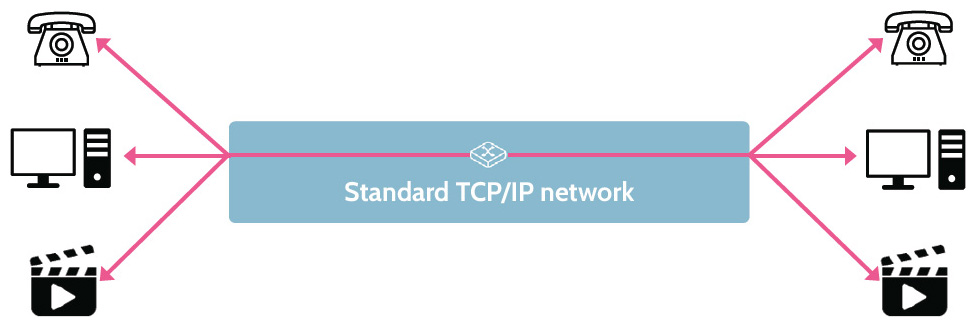
Figure 4-15: Convergence
Three commonly used converged protocols are noted in Table 4-26.
|
FCoE |
Fibre Channel over Ethernet |
|
iSCSI |
Internet Small Computer Systems Interface |
|
VoIP |
Voice over Internet Protocol |
Table 4-26: Converged Protocols
Be familiar with VoIP, common VoIP protocols, and the types of attack that takes place in VoIP environments
FCoE enables Fibre Channel protocol traffic to be encapsulated and carried over Ethernet networks. iSCSI enables the use of SCSI commands across a network, particularly in the context of storage-related activities like backups. VoIP, which many people refer to as IP telephony, enables data networks to carry voice traffic using protocols such as H.323 and SIP. With each of these examples, security is not a built-in component, and adding it often results in lowered functionality and efficiency. Other common terms relating to voice are summarized in Table 4-27.
|
PBX |
A private branch exchange is a private telephone network that supports internal communications, usually in the context of an organization or a place like a hotel. |
|
PSTN |
A public switched telephone network is essentially the traditional, copper-wire-based telephone network that allows people and businesses to communicate with each other. |
|
VoIP |
Voice over Internet Protocol allows people and businesses to communicate via an internet connection, instead of a traditional copper-wire-based phone line. |
|
InfiniBand |
A protocol for remote direct memory access (RDMA). This protocol is designed to provide access to memory as quickly as possible across the network. It is commonly used in applications like machine learning. |
|
Compute Express Link |
A protocol for connecting CPUs to other components, such as devices and memory, as quickly as possible. |
Table 4-27: Common Terms Related to Voice
Considering the way that IP networks operate-with data being broken up into packets and sent across the network, where they might travel in different directions and arrive in a different order than they were sent-it follows that supporting voice communications in the fundamentally same manner is not as easy. For this reason, specific protocols were developed to ensure smooth and secure VoIP sessions and to mitigate problems that might otherwise result if voice and video session packets were treated the same as ordinary data packets. Two main VoIP protocols are summarized in Table 4-28.
|
Secure Real-time Transport Protocol (SRTP) |
Session Initiation Protocol (SIP) |
|
This is the secure version of RTP, which supports encryption, authentication, integrity, and replay attack protection. Note that RTP is mainly used for streaming voice and video over IP, with no existing security in it. SRTP also provides good bandwidth optimization, low resource requirements, and is independent from underlying protocols. The full description of its operation is described in RFC 3711. |
SIP is responsible for initiating, maintaining, and terminating voice and video sessions. It can also support a direct connection between PBX and public telephony networks. |
Table 4-28: VoIP Protocols
Vishing
Vishing is a form of phishing (voice phishing) that specifically takes place in the context of VoIP environments. The attacker can easily spoof known or familiar numbers and then obtain information that a victim might not otherwise provide. Note the difference between vishing and smishing. Vishing entails the attacker calling the victim and trying to obtain valuable information or make them perform a certain action (e.g., click on a URL). Smishing, on the other hand, relates to the attacker sending SMS messages to the victim (SMS phishing).
4.1.13 Network Security Attacks
CORE CONCEPTS |
|
|
|
|
|
|
|
|
|
Understand how a network attack differs from a network assessment
With an understanding of the OSI model, relevant protocols and devices found at each layer, and a sense of the importance of security at each layer, let's dive a bit deeper and examine how to best prevent and defend against network attacks. With any attack, a series of steps or phases will be executed.
Network Attack Phases
Network attacks and network assessments (including penetration tests) are very similar. In fact, at a high level, they include identical steps. The main difference is that an attacker will not care if they inflict damage on the target network when they are launching an exploit, while the penetration tester will do that in a more controlled manner and while respecting the scope and rules of engagement.
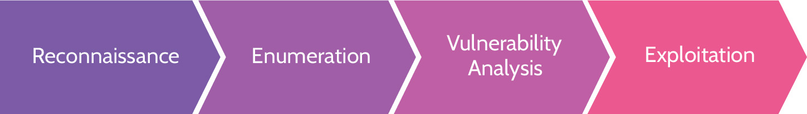
Figure 4-16: Attack Phases
In virtually all cases, any successful attack will sequentially go through the phases outlined in Figure 4-16. From a security perspective, making each of these phases very difficult or impossible to achieve should be the goal. Preventing attacks is practically impossible, which is why organizations should focus on making potential attacks time consuming, expensive, and not worth the effort, so attackers will look elsewhere.
With any attack, reconnaissance will first be performed. Reconnaissance is the initial gathering of valuable information that will aid the attacker. IP address ranges used by an organization, domain names, services that are running on devices, or operating system in use are all things an attacker might seek as part of the reconnaissance phase.
From a security perspective and with this in mind, one of the best things an organization can do to minimize the amount of information an attacker might discover during the reconnaissance phase is to not publish things like IP address ranges or domain names. Additionally, much information about an organization can be gleaned from social media, from sites like LinkedIn, or from technical forums, where people from around the globe often convene to learn from and help each other. Individually, these bits and pieces of information might not mean much, but when gathered together by a determined attacker, they could very well become the key that opens the door. So, limiting publicly available information is one part of the equation, and creating policy and awareness for the sake of staff is another.
The phase that follows reconnaissance is known as enumeration. Usually before account enumeration, the attacker will perform scanning to look for open ports, especially open ports for interesting services like FTP or HTTP servers, and other software versions of interest. Once those are identified, the attacker will try to enumerate the target for active accounts that can be used to gain access.
During vulnerability analysis, the attacker will look for vulnerabilities that can be exploited. That's why it's so helpful for an organization to have a vulnerability management program, as they can use the same tools as attackers and perform similar vulnerability analyses to identify vulnerabilities and gaps and implement controls to make it very difficult for an attack to be successful.
During exploitation, the attacker attempts to exploit the vulnerabilities identified during the vulnerability analysis phase. An organization can put detection mechanisms in place to provide alerts if some type of breach or attack does take place during exploitation. For example, if an attacker tries to perform brute-force password cracking against the administrator account, an alert can be generated to signify this activity.
In addition to understanding the network attack phases, it's important to understand the difference between passive and active attacks. In general, a passive attack means the attacker is passively performing an activity (e.g., intercepting traffic and inspecting it) without directly interacting with the target. However, during an active attack, the attacker will directly engage with target, e.g., during a Denial-of-Service attack.
Passively Eavesdropping
Passive attacks leave the environment unchanged, and the target has no idea that anything has taken or is taking place. Eavesdropping is a great example of a passive attack. Information is being reviewed, but nothing is changing, and the information gained can be used for purposes of exploitation later in the attack. Monitoring or reviewing information traveling across a network is another form of eavesdropping. This is also known as sniffing the network or network sniffing, as shown in Figure 4-17. Data intended for others is intercepted, but no other action is taken.
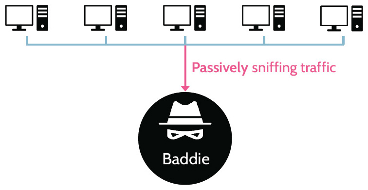
Figure 4-17: Passive Traffic Sniffing
Actively Scanning
Understand how SYN scanning and SYN flooding abuse the normal three-way TCP/IP handshake
Unlike passive attacks, active attacks change packet content. Masquerading and denial-of-service attacks are examples of active attacks. During scanning, the target gets alerted of the activity as there's interaction with it, so it's considered an active attack. A classic scanning tool for that is Nmap, and it only supports active operating system fingerprinting, because it sends specific packets and waits for responses to be provided by the target system, which are then reviewed to identify what the target OS may be.
SYN Scanning
Tools like Nmap can easily perform SYN scanning, which consists of the following steps and is also depicted in Figure 4-18.
1. A client sends a SYN packet to a target machine's specific port (e.g., TCP port 80) to try and identify if it's open or closed.
2. Possible responses are:
a. If the port is open, the target replies with a SYN-ACK packet, and then the client responds with a final ACK packet, and the session is established.
b. If the port is closed, the target responds with a RST packet, and the session is terminated.
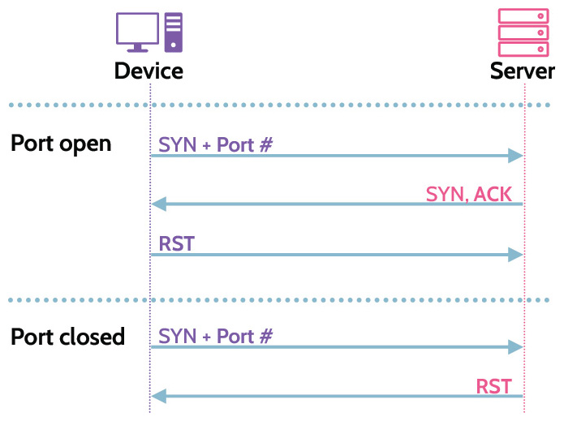
Figure 4-18: SYN Scan
Note that if the attacker wants to perform a stealth scan, e.g., using Nmap, they can do so by sending a RST packet at the third step of the three-way handshake and thus never sending the final ACK and formulating a full connection. This is known as a stealth or half-open scan.
SYN Flooding
As noted, with a normal three-way handshake, each open connection consumes a small amount of system resources. SYN flooding, depicted in Figure 4-19, takes advantage of this fact when multiple SYN requests are sent in rapid succession to a target machine, which responds with a SYN-ACK packet, considering these valid connection requests (parts of the first step of the three-way handshake). However, as the volume increases, the target machine is unable to acknowledge new requests fast enough, as its connection table is now filled. Eventually, the target machine's system resources and ability to respond are exhausted, and the machine crashes or stops responding entirely. SYN floods are active attacks, because they impact the host by degrading its performance or bringing it down altogether.
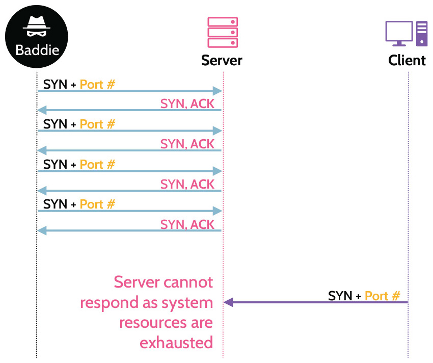
Figure 4-19: SYN Flood
One of the best ways to protect against SYN attacks is using a proxy, which acts on behalf of the devices on a network. The proxy has the ability and intelligence to understand whether a SYN scan or flood is taking place and then act accordingly to block the attack. Firewalls and IPS devices are also quite good at detecting SYN flood attacks and dropping offending traffic.
IP-Based Attacks
Understand different types of IP-based attacks
Examples of IP-based attacks include overlapping fragment and teardrop attacks, both of which are discussed in Table 4-29.
|
Fragment attacks |
Overlapping fragments |
This attack uses overlapping fragments in an attempt to bypass firewalls and IDS/IPS tools to gain access to a target system. Part of the attack pattern is sent in fragments, along with other data that can pass through the firewall. The goal of the attacker is to pass the attack sequence through any security tools, and when reassembly takes place (at the destination resource) to have the attack sequence created for it to execute. |
|
Teardrop |
With this TCP attack, the attacker sends fragments of packets of differing sizes, out of order, and with fake fragment sequence numbers to a target system. The target system cannot reassemble the packets, causing it to consume its resources and degrade its performance and even crash, thus causing a denial-of-service attack. |
|
|
IP Spoofing attacks |
Smurf |
A Smurf attack is executed following steps below: 1. Attacker spoofs their IP address to match the victim's 2. Attacker sends multiple ICMP echo request packets to intermediary network devices 3. Those devices respond with ICMP replies, which are directed to the victim (since the attacker spoofed their IP address to match the victim's in step #1) This causes a denial-of-service attack to take place at the victim's device, which is inundated with ICMP reply traffic. |
|
Fraggle |
Like a Smurf attack, a Fraggle attack is also a denial-of-service attack that begins with IP spoofing. The attacker then sends a massive amount of UDP packets to the target system (destined to ports 7 and 19). Historically these ports relate to the Character Generator Protocol (CHARGEN) service. If either of these ports is open on a target, once they receive a request they will start generating a sequence of characters that will be directed to the victim thus overwhelming it with traffic. Note that both the Smurf and Fraggle attacks are considered old attacks, and it's unlikely to see them used today. |
Table 4-29: Fragment and IP Spoofing Attacks
DoS and DDoS
Understand DoS and DDoS, man-in-the-middle, and spoofing attacks
In the context of discussion about IP-based attacks, Denial-of-Service was mentioned. Let's examine this concept a bit more, including what's known as a Distributed-Denial-of-Service attack. Both types can be seen in Figure 4-20.
A Denial-of-Service (DoS) attack is any attack that attempts to impede or completely deny functionality of a system or network. In this sense, one machine is being used to cause the loss of functionality. A Distributed-Denial-of-Service (DDoS) attack involves multiple machines acting in unison. In this case, what first must happen is that a number of hosts must be compromised by a threat agent. Once this is accomplished, the compromised hosts can be programmed to work as one, aiming all their processing power and bandwidth at the target, resulting in a Distributed-Denial-of-Service attack.
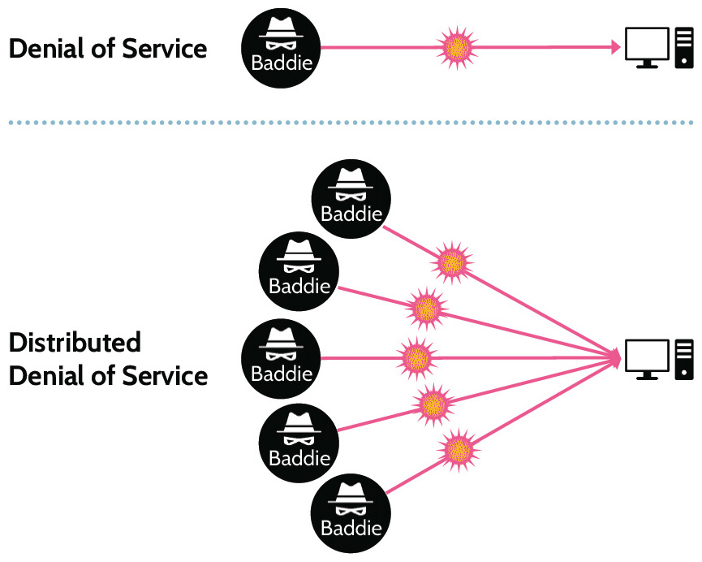
Figure 4-20: DoS and DDoS Attacks
Man-in-the-Middle
A man-in-the-middle attack, depicted in Figure 4-21, manifests when the attacker inserts themselves in the communication path of two entities and thus has an opportunity to intercept and manipulate traffic between them.
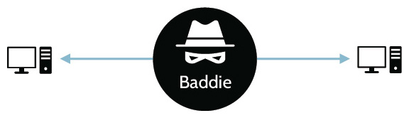
Figure 4-21: Man-in-the-Middle Attack
Spoofing
Spoofing and masquerading, mentioned earlier, are essentially the same thing. Spoofing is pretending to be someone or something else, because that someone or something usually possesses more privileges or has access to a resource. For example, an attacker may spoof their IP address to bypass an access control list that only accepts traffic from a certain IP address. In that case, the attacker may assume a different IP to send offending traffic to a target. It's really important to remember that when an IP address is spoofed by the attacker, although they can send traffic to a target resource, they won't be able to accept something in response. Any response will be directed to the legitimate holder of that IP address.
Spoofing is not limited to one area of focus. Email, DNS entries, user IDs, IP and MAC addresses, and even biometrics can be spoofed. Really, anything that might prove valuable or useful can be spoofed.
Common Tools and Protocols
Table 4-30 summarizes some common tools and protocols that attackers use to take advantage of networks.
|
Ping |
Ping is a TCP/IP-based utility that is used to determine if a network host is "alive" or available and to measure response time. It can be a very useful and quick network troubleshooting tool. However, because of the way it functions, it can also be a very useful reconnaissance tool, by allowing an attacker to identify potential targets. |
|
Traceroute |
Traceroute, like ping, is a TCP/IP-based utility that takes ping a step further and actually maps a network connection from one host to another. Its usefulness comes in that it shows every hop traversed between the two locations. An attacker can take advantage of that to map a target network. |
|
ICMP |
ICMP stands for Internet Control Message Protocol and supports TCP/IP utilities like ping and Windows traceroute, among others. ICMP messages come as different types that are differentiated by types and associated codes (think of them as subtypes). For example, when using the ping utility to see if a host is alive, ICMP might return a type 3 code 1 "Destination Unreachable" message. Type 3 means the destination is not reachable, while code 1 shows that this is due to the host not being reachable in particular. For example, a code 0 would indicate the target network was unreachable. This can be valuable information for an attacker. |
|
DHCP |
Dynamic Host Control Protocol is used to assign a valid IP address to a device when it first connects to a network. Whether at home, on a corporate network, or anywhere else, if a connection to a network is made a valid IP address is assigned to the connecting device. DHCP does this automatically. An attacker can use a tool to make them seem like they are a legitimate DHCP server on the network and thus trick victims into getting connection information, which may include setting up the attacker's machine as their default gateway. In that regard, the attacker would then be able to intercept all network traffic, as it would pass through their machine. |
|
Ipconfig |
Used mainly in Windows systems to display TCP/IP network configuration values and can refresh Dynamic Host Configuration Protocol and Domain Name System settings. |
|
WHOIS |
A query and response tool that is widely used for querying databases that store the registered users or assignees of an internet resource, such as a domain name, an IP address block, or an autonomous system public domain registration information. |
|
Dig |
A network administration command-line tool for querying the Domain Name System (DNS). |
|
Putty |
A free and open source terminal emulator, serial console, and network file transfer application. It supports several network protocols, including SCP, SSH, Telnet, rlogin, and raw socket connection. |
|
Nmap |
A free and open source network scanner used to discover hosts and services on a computer network by sending packets and analyzing the responses. |
|
John the Ripper |
John the Ripper (JtR) is an open source password cracking tool and is available for many operating systems. |
|
Netstat |
A command-line network utility that displays network connections for TCP and UDP (both incoming and outgoing), routing tables, and a number of network interface (network interface controller or software-defined network interface) and network protocol statistics. |
|
Nslookup |
A network administration command-line tool used for querying the Domain Name System (DNS) to obtain domain name or IP address mapping or other DNS records. |
Table 4-30: Common Tools and Utilities Attackers Leverage
ARP Poisoning
Understand what ARP tables do and ARP poisoning
We already mentioned how ARP works earlier. An attacker can try to leverage the protocol's operation to intercept traffic destined for a legitimate destination as depicted in Figure 4-22. A switch has a content addressable memory (CAM) table, which holds mappings of MAC addresses and which ports the respective devices are connected to. When traffic for a device for which the switch doesn't have an entry reaches it, it will send a broadcast message that essentially asks, "What MAC address belongs to this IP address?" All of the devices will look at their ARP tables, and the device associated with that IP address will reply back, "That's me, here's my MAC address," at which point the switch will send the request to that device. It's actually quite simple, and this fact explains why it's equally simple for someone to modify their ARP table to direct network traffic meant for another device to their device. There's no authentication or security built into ARP tables, and the same holds true for many other devices and protocols that utilize tables. As such, if the attacker were to send an ARP reply to the switch denoting a specific MAC address, then the switch would consider that legitimate and log it in its ARP table.
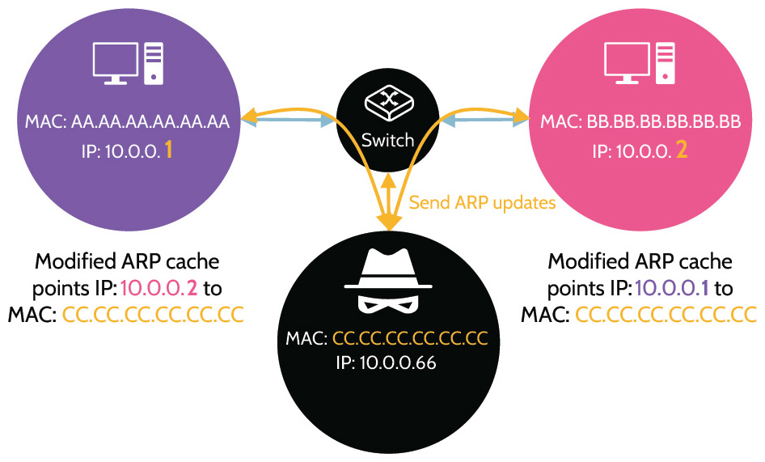
Figure 4-22: ARP Poisoning
Monitoring of activities across network segments is one of the best ways to prevent ARP poisoning. This holds true with regards to DNS too, though in recent years, DNSSEC has been developed and employed by many organizations to prevent DNS poisoning. With all these vulnerabilities, if good preventive or detective controls don't exist, good compensating controls should be implemented. This typically means more logging and monitoring, depending on the value of the asset in question.
4.1.14 Wireless
CORE CONCEPTS |
|
|
|
|
Early versions of Bluetooth, Wi-Fi and similar technologies had limited security features. Regardless of the wireless technology in use, one of the easiest ways to introduce security is through segregation. In other words, especially with Wi-Fi, different networks can be set up. Guests can be segregated to their own network, employees to an internal network, and vendors or external visitors to yet another network, with each network segment containing security appropriate to the need. All of this points to a network architecture as illustrated in Figure 4-23.
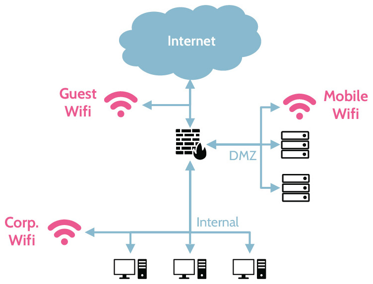
Figure 4-23: Network Architecture
Radio Frequency Management
Radio frequency management refers to the placement of devices that broadcast wireless traffic. For example, the placement of Wi-Fi access points within a building should carefully consider how far out wireless signals extend outside the building. If the signal extends to the parking lot, somebody could sit in a car for hours and attempt to break into the network. Ideally, access points are located in such a way that authorized individuals can utilize the Wi-Fi service and untrusted people cannot.
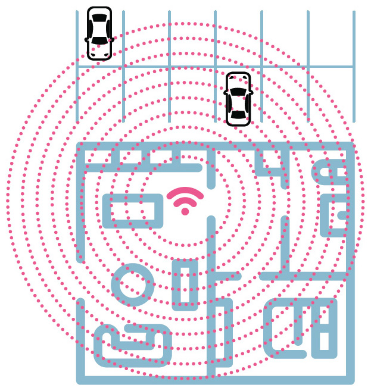
Managing Wi-Fi signals is called radio frequency management, which can prove quite challenging at times as there are an abundance of different devices operating at different areas of the radio spectrum, as also seen in Figure 4-24. In addition to Wi-Fi, other technologies like Bluetooth, cellular, and RFID, can be found. Despite the differing technologies, they all share a common feature. They're all examples of emanations. Though a number of frequencies exist, three of them-2.4 GHz, 5 GHz, and 900 MHz-are of particular interest. These are unlicensed radio frequencies, which means that anybody can create a technology or device that operates within those frequencies.
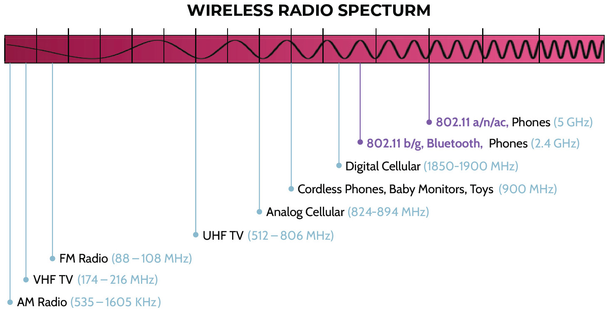
Figure 4-24: Wireless Radio Spectrum
Wireless Technologies
As noted in Figure 4-24, the wireless radio spectrum includes a number of wireless technologies, some of which are summarized in Table 4-31. In its most basic form, wireless refers to communication without using the physical medium of wires or cables. It is the transmission of data over the air-via channels encompassed by the wireless radio spectrum.
|
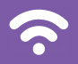 Wi-Fi |
Wi-Fi, described in more detail below, follows standards outlined by IEEE 802.11 specifications. Wi-Fi is used in many contexts, from printing to connecting to network resources and turning a mobile phone into a Wi-Fi hot spot for use by a computer or other devices. |
|
Bluetooth |
Bluetooth is a wireless technology that supports devices in close proximity. For example, many people today use Bluetooth keyboards and mice with their computers instead of wired versions. Similarly, most modern automobile audio systems include Bluetooth, which allows a similarly equipped mobile phone to connect and play music stored on the phone through the automobile speakers. |
|
Cellular |
Cellular is used to refer to wireless protocols and standards used by mobile phones. Within this spectrum, Code Division Multiple Access (CDMA), Global System for Mobiles (GSM), 3G, 4G, and now 5G all represent the specific ways the devices are designed to communicate with cellular networks. |
|
RFID |
RFID, also known as Radio Frequency Identification, refers to a specific type of wireless system that is made up of readers and some type of tag, chip, or label. The reader emits radio waves and receives signals back from the object. The tag, chip, or label can be used for any of a number of purposes, such as asset management, inventory control, or similar type of tracking. RFID technology allows otherwise mundane tasks to be automated as well as to reduce errors that might otherwise occur when processes are performed manually. |
Table 4-31: Important Wireless Technologies
802.11 Wireless Protocol Family
Table 4-32 outlines different IEEE 802.11 specifications, starting with 802.11 and progressing to one of the latest: 802.11bn (Wi-Fi 8). This is essentially a look down wireless memory lane. Each variation of wireless is noted, along with the frequency range(s) a given specification covers as well as the maximum achievable speed. However, as noted above, each specification shares the same security concern-security is not native to any of them. Note that at the time of writing, 802.11be is expected to be approved late in 2024, while 802.11bn is expected to be approved in 2028.
|
Type |
Frequency |
Top speed |
|
802.11 |
2.4 GHz |
2 Mbps |
|
802.11a |
5 GHz |
54 Mbps |
|
802.11b |
2.4 GHz |
11 Mbps |
|
802.11g |
2.4 GHz |
54 Mbps |
|
802.11n |
2.4 & 5 GHz |
72 - 600 Mbps |
|
802.11ac |
5 GHz |
422 - 1300 Mbps |
|
802.11ax (Wi-Fi 6) |
2.4 & 5 GHz |
10 Gbps |
|
802.11ax (Wi-Fi 6E) |
2.4, 5 & 6 GHz |
10 Gbps |
|
802.11ad (WiGig) |
60 GHz |
7 Gbps |
|
802.11be (Wi-Fi 7) |
2.4, 5 & 6 GHz |
40 Gbps |
|
802.11bn (Wi-Fi 8) |
? |
? |
Table 4-32: 802.11 Protocol Family
802.11 Security Solutions
Understand common wireless standards, from weakest to strongest, and elements of each
To secure wireless communication, four (4) security services are required: access control, authentication, encryption, and integrity protection. Over the years, different bundled security protocols have been developed that provide these services, and they're represented by three main standards in the wireless industry: 802.1X, WPA, and WPA2. It's worth noting that WPA3 has been released but is still not widely implemented.
Table 4-33 outlines how each of the security services are implemented. For example, WPA2 uses a pre-shared key (PSK) or 802.1X for access control. It also uses EAP or PSK for authentication, CCMP (which is essentially AES Counter Mode) for encryption, and CCMP-AES plus Message Authentication Code (MAC) to ensure integrity.
|
802.1x Dynamic WEP |
Wi-Fi Protected Access (WPA) |
Wi-Fi Protected Access 2 (WPA2) |
Wi-Fi Protected Access 3 (WPA3) |
|
Released |
1997 |
2003 |
2004 |
2018 |
|
Access Control |
802.1X |
802.1X or Pre-Shared Key |
802.1X or Pre-Shared Key |
802.1X or Pre-Shared Key |
|
Authentication |
EAP methods |
EAP methods or Pre-Shared Key |
EAP methods or Pre-Shared Key |
EAP methods or Pre-Shared Key |
|
Encryption |
WEP |
TKIP (RC4) |
CCMP (AES Counter Mode) |
CCMP or GCMP (Galois Counter Mode Protocol) |
|
Integrity |
None |
Michael MIC |
CCMP |
CCMP or GCMP |
Table 4-33: WEP and WPA
Wireless Authentication
There are three main ways used to authenticate to a wireless network:
Open authentication (a device can connect by using the network's SSID, with no security enabled).
Shared key (a pre-shared network key is used, which is shared across any device that needs to connect to the network).
EAP is used (authentication requires an authenticated key exchange mechanism), which can lead to one- or two-factor authentication:
One-factor: EAP-MD5, LEAP, PEAP-MSCHAP, TTLS-MSCHAP, EAP-SIM
Two-factor: EAP-TLS, TTLS with OTP, and PEAP-GTC
Note that to achieve robust authentication in wireless networks, it's ideal to have mutual authentication enforced, which means that the client is asserted of the access point it's connecting to, and the access point can be assured that the client is valid.
Wireless Encryption
The main encryption technologies are:
Temporal Key Integrity Protocol (TKIP): Was instituted as a fix of the WEP vulnerabilities and was used in WPA (with an RC4 stream cipher and 128 bit per-packet keys) but is vulnerable to attacks mainly due to the WPA requirement to support hardware compatibility with WEP.
Counter-Mode-CBC-MAC Protocol (CCMP): Uses Advanced Encryption Standard (AES) with 128-bit keys, which is used in WPA2 and WPA3.
Understand the importance of TKIP relative to WEP and why WEP is considered weak
Wireless Integrity Protection
Main methods for integrity protection are:
TKIP uses a Message Integrity Code called "Michael."
WPA2 uses CCMP (which uses AES in CBC-MAC mode).
A short summary of TKIP is provided below:
Designed to replace WEP without requiring the replacement of legacy hardware
Required due to significant flaw found in WEP-specifically, the use of a weak IV that allowed WEP to be easily cracked
Sends each new packet with a unique encryption key (key mixing)
TKIP is no longer considered secure and is superseded by AES
TKIP is an interesting protocol, as it served as a stopgap when significant flaws and vulnerabilities were discovered with WEP. Immediately, attempts were made to mitigate the vulnerabilities with WEP. TKIP, which uses a 128-bit key size symmetric stream cipher known as RC4, was developed. A better version of TKIP was developed, a counter mode version, that uses stronger encryption known as AES.
To protect any wireless communication, four things are needed: access control, authentication, integrity protection, and encryption. TKIP implements a Message Integrity Check (MIC), often referred to as "Michael." The details about how it works are not necessary for the sake of the CISSP exam; it's enough to know that it provides integrity control, like a hashing algorithm. Additionally, TKIP was implemented in a manner almost as if applying a patch. Technology that already used WEP would still work, and the more secure encryption protocol TKIP would handle encryption needs.
4.1.15 VLAN and SDN
CORE CONCEPTS |
|
|
|
|
|
Virtual Local Area Network (VLAN)
Understand the basic premise and use of VLANs
Virtualization technologies are the underpinnings of cloud computing. Though virtualization is more well-known now, virtualization capabilities have been around since the early days of computing. Mainframe computers could actually be broken up into virtualized environments, with each environment having its own operating system, devices, peripherals, and so on. From a security perspective, isolating things through this type of separation creates a more secure environment. Since the days of mainframe computers, virtualization has matured significantly, to the point where cloud computing is now at the forefront of most often used technologies.
Virtualizing networks is separating networks by creating segments that are separate from each other. Through this isolation, a more secure environment can be created.
VLAN stands for virtual local area network, and a VLAN can be created using devices, technologies, and software. A VLAN reduces the need for physical rewiring by creating virtual tunnels through physical networks to connect devices. VLAN segments should be created and used based upon the value of those segments. Typically, a Layer 3 switch can be used to create VLANS, based upon needs and value. Figure 4-25 shows a simple example of two VLANS (VLAN 1 and VLAN 2) that were created across two switches. Specific ports are configured to support a given VLAN, and any devices connected to those same ports will be on the same VLAN.
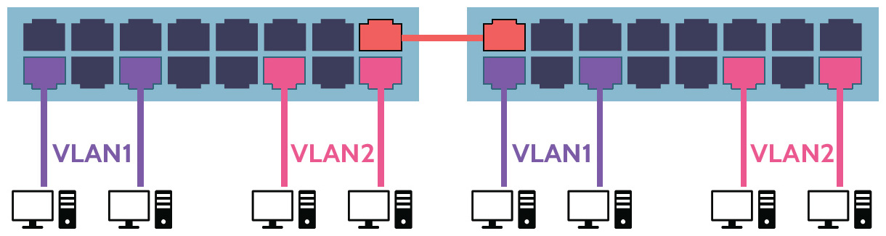
Figure 4-25: VLAN Operation
Software-Defined Networks (SDN)
Understand how a SDN differs from a traditional wired network
As the name suggests, software-defined networking (SDN) is basically creating and managing a network using software. Software applications can be written that are very intelligent and function to the point that they mimic hardware devices, like routers, switches, and firewalls. Of course, as has been discussed, this software-based functionality comes at the cost of potential vulnerabilities that can be exploited.
Figure 4-26 illustrates a traditional network and a software-defined network (SDN). In the latter, applications provide the functionality provided by hardware devices found in a traditional network. With a software-defined network, some traditional physical network elements-like cabling-are still required; otherwise, the primary network elements are virtualized, and the network functions exactly as if everything were hardware based.
A SDN provides abstraction from the underlying physical network to enable rapid reconfiguration with centralized control. The abstraction is accomplished in the context of "planes"-areas where certain processes are executed.
With a SDN, two primary planes are found-the data plane and the control plane. Looking closely at Figure 4-26, there is one control plane for the SDN. The control plane acts as the "brain" of the SDN and understands everything about the network. More specifically, it is the part of the SDN that determines how the routing of packets across the network should take place. Based upon this information, it follows that routing tables and routing protocols would be part of the control plane.
Based upon how the control plane determines packets should be forwarded, the data plane handles the actual forwarding of packets to the proper destination.
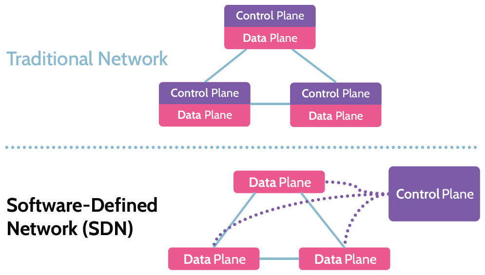
Figure 4-26: Traditional vs. SDN Network
SDN Architecture
Understand the basic components, including flow, of an SDN
Figure 4-27 further illustrates the architecture of an SDN and brings to light another plane-the Application plane, as well as two more terms: Northbound and Southbound APIs.
The Application plane in an SDN hosts the applications and services that make network function-related requests from the control plane via northbound APIs. Application plane applications and services could include things like firewall and other security functionality, reporting, and network management, to name a few examples. Northbound APIs only pertain to communication between the Application and Control planes.
Similarly, Southbound APIs only pertain to communication between the Data and Control planes. The southbound interface facilitates communication between the SDN controller and the physical networking hardware.
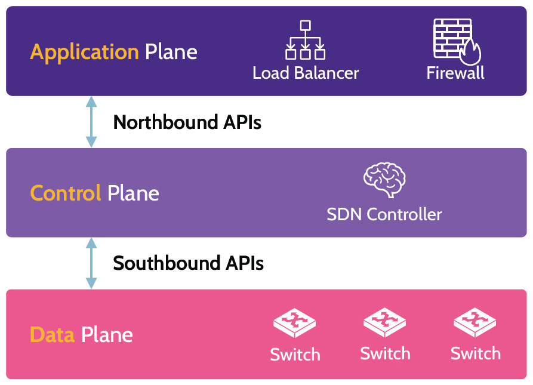
Figure 4-27: SDN Architecture
Virtual Private Clouds (VPCs)
A virtual private cloud (VPC) is a portion of a public cloud provider's infrastructure. It's a customizable and logically isolated cloud that providers offer to customers. VPCs to not involve separate physical hardware, which means that the isolation is purely virtual.
IEEE 802.1Q
Know the IEEE standard that supports VLANs and SDNs
IEEE 802.1Q refers to the IEEE standard that supports VLANs and SDNs. Among other things, the standard defines a system of what is known as "VLAN tagging" for network traffic as well as how bridges and switches should handle tagged frames. In effect it ensures that traffic destined for a specific VLAN, e.g., VLAN1, is able to only reach that VLAN and no other one.
4.1.16 Wide Area Networks (WAN)
CORE CONCEPTS |
|
|
To understand what constitutes a Wide Area Network (WAN), it helps to understand what constitutes a Local Area Network (LAN). A LAN is traditionally considered as a network that is confined to a small, local area, like a building. A WAN therefore is a network that extends far beyond a single location and usually involves connecting devices across wide geographical boundaries, like different cities or even different countries. Certain technologies enable these connections, and they're often sold or leased to consumers by service providers, like AT&T, Verizon, Sprint, among others. These providers have engineered WAN packet-switching networks that enable connectivity between locations, for example, a LAN in Texas to a LAN in Washington, DC, and they charge for things like data and bandwidth needs as well as for varying levels of quality of service (QOS). As the name implies, QOS focuses on error handling and the ability to provide services like IP convergence.
Know common WAN protocols and key features of each
Of course, these technologies have evolved over the years. Original WAN technologies connected devices across telecommunications networks-PSTN-using modems. Satellite and microwave-based technologies were also quite prevalent years ago. Today, however, data packet carrier services are most often used. These services include things like Frame Relay, ATM, and MPLS, and are procured through service providers as noted above.
Table 4-34 outlines some of the key evolutions of WAN technologies.
|
X.25 |
X.25 is one of the pioneers of WAN packet-switching protocols. In fact, it's still highly regarded for its error correction capabilities. At the same time, X.25 is not efficient and creates high overhead. |
|
Frame Relay |
Frame Relay followed X.25, and unlike X.25's focus on quality of service and error correction, Frame Relay's focus is on speed of transmission. In the context of Frame Relay, two types of circuits can be found: permanent virtual circuits (PVCs) and switched virtual circuits (SVCs). PVCs support end-to-end links over a physical network, and SVCs are similar to circuit-switched networks, like PSTN. |
|
Asynchronous Transfer Mode (ATM) |
ATM builds on many of the best features of Frame Relay and can support very high-speed transmission needs. ATM is connection-oriented and works through the creation of a virtual circuit between endpoints prior to data being exchanged. ATM virtual circuits can be permanent or on-demand. |
|
Multi-Protocol Label Switching (MPLS) |
MPLS is at the forefront of current WAN connectivity solutions, because it offers network connectivity that includes built-in security. Using features like forwarding tables and labeling schemes, MPLS providers can guarantee that customer's data transmissions cannot be touched by anybody else while traversing the MPLS provider network. However, even with this guarantee, the provider networks are still untrusted networks, right? Just because AT&T can guarantee that an organization's data transmissions will be safe while traveling across AT&T's network, somebody within AT&T could still access and read those transmissions. It's their network, so they can potentially access all data traveling within it. This explains why many organizations, even when using MPLS technology, will still encrypt their data-to prevent potential data snooping from the MPLS provider itself. Organizations should decide whether or not to encrypt their data based on the value and sensitivity of the data. |
Table 4-34: WAN Technologies
4.2 Secure network components
4.2.1 Network Architecture
CORE CONCEPTS |
|
|
|
|
Understand what is meant by the term "network architecture" and key elements of a good network architecture
Good network architecture can provide many benefits and help prevent and protect an organization if attacked by malicious outsiders or insiders. Key elements of network architecture include the concepts noted below.
Defense in Depth
The concept of defense in depth refers to combining multiple layers of security controls to protect a network. Think of defense in depth as multiple layers of circles, with items like policies and procedures being the outermost layer, environmental considerations being the next, physical infrastructure next, followed by operating systems, and finally software configurations. Put another way, the outermost layer consists of people and processes, then architecture controls, then cabling and switching, and finally operating system controls and things like firewall configurations.
Partitioning
Partitioning is the practice of controlling the flow of traffic between segments. Refer to the earlier network topology example of a bus (depicted in Figure 4-2), where all devices are connected to the same wire-each device can see all the traffic traveling across the wire.
To protect this traffic, partitioning-also known as network segmentation-can be utilized. Some areas of a network might require a higher level of security than others. Partitioning can be used to prevent traffic from those areas from being seen across the entire network. Switches, routers, and firewalls can all be used to create partitions, or segments, and then rules implemented to control the flow of traffic between segments.
By far, the most important partition to create is the one that separates an organization network from externally connected networks. The best example of an external network is the internet. Organizations do want, and often need, to be connected to the internet, but they also want to block certain network traffic-in both directions. Incoming traffic should certainly be scrutinized and confirmed to be legitimate, but outgoing traffic should also be scrutinized for purposes of things like data loss prevention and identification of any malicious traffic destined to the outside world. So, firewalls and devices that sit between the main network and the internet can enforce rules that look at incoming and outgoing traffic.
Network Perimeter
The network perimeter is the last point any organization can control. Like physical security, where controls should comprise preventive, detective, and corrective capabilities, the same should hold true for the network. Controls at the perimeter should comprise preventive, detective, and corrective capabilities. Similar to a physical perimeter, where the ideal number of entrance and exit points is exactly zero, a network perimeter should be equally hard to breach. Ideally, only one entrance and exit point should exist. Otherwise, like a building with multiple entrances and exits, monitoring the flow of traffic can be extremely difficult. Limiting the ingress and egress point of a network to one creates a choke point-a point where devices and technologies that enforce rules can be placed to ensure all incoming and outgoing traffic is analyzed. Figure 4-28 depicts two choke points in a simple network, the first between the public network and the non-sensitive private network, and a second that any traffic must pass through to access the sensitive private network.
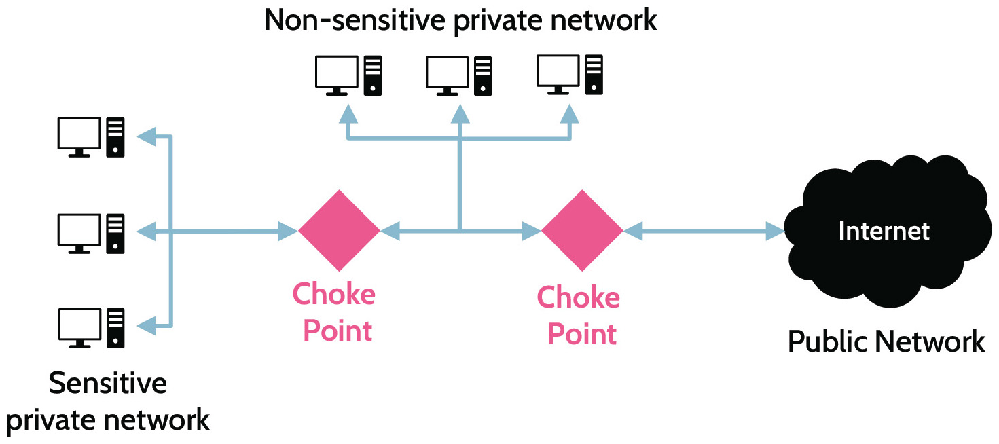
Figure 4-28: Network Choke Points
Network Segmentation
Referring to Figure 4-28, consider the public network to be the internet and the devices to the left to be an internal network (named sensitive private network). Access to the internet is important for so many reasons-to connect with clients, business partners, to market products via a website, and to exchange email, just to name a few. To make these connections and accomplish these goals, specific applications hosted on specific devices would need to be in place. For instance, if customers want to order products, an e-commerce application would need to exist. If anybody wants to send or receive an email, an email application would need to be running. With this in mind, does it make sense for these applications to be hosted on the internal network? From a security perspective, this would be very unwise, because people from the public network-from the internet-would then be on the inside, and everything would be at risk.
Bastion Host
Understand what is meant by the term "bastion host" and where a bastion host might typically be found in a network architecture
This risk can be mitigated through the creation of a subnetwork, usually referred to as a Demilitarized Zone (DMZ), where services and applications that require public access can be segregated. The DMZ is not part of the internal network nor is it part of the internet, it sits in between the two and it can be controlled by the organization. As alluded to above, any service or application that requires access from the outside-like web applications, email, DNS, and remote access-can be placed in the DMZ. Because the organization controls the DMZ, it can also provide necessary protection for each application. In this context, devices and applications within a DMZ are often referred to as bastion hosts and bastion applications. The word bastion is French and loosely translates to "fortress," readied and strengthened for attack. Within the DMZ, hosts and applications that have been hardened and strengthened to protect against exploits and attacks are referred to as bastions. Between the DMZ and the Internet is a boundary router. The simplest form of a firewall is a router which sits between two networks and controls the flow of traffic by analyzing each packet header for source and destination IP addresses and ports. A router used in this role is often referred to as a boundary router, as shown in Figure 4-29.
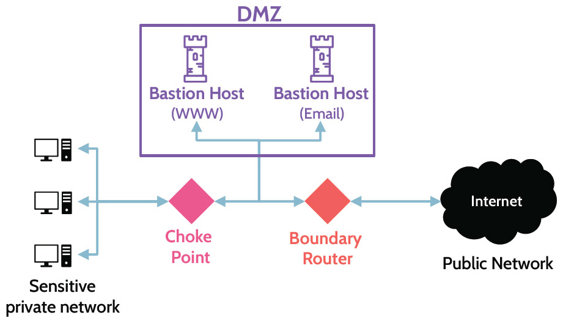
Figure 4-29: DMZ and Bastion Hosts
Microsegmentation
We often use virtualization to quickly and cheaply deploy logical networks. In contrast to using physical devices, the cost-effectiveness of virtualized networks allows us to segment our networks at a much more granular level. We refer to this as microsegmentation.
Let's give you a more concrete example to demonstrate just how advantageous this can be. First, let's say your organization has a traditional network. You would have the insecure Internet, a physical firewall, and then the DMZ, where you would have things like your web server, your FTP server and your mail server, as shown in Figure 4-30. Under this setup, your firewall rules would need to be fairly loose to allow the web traffic, the FTP traffic and the SMTP traffic through to each of your servers. The downside of this configuration is that if the web server was compromised by an attacker, this would give them a foothold in your network that they could use to access your FTP server or your mail server. This is because all of these servers are on the same network segment.
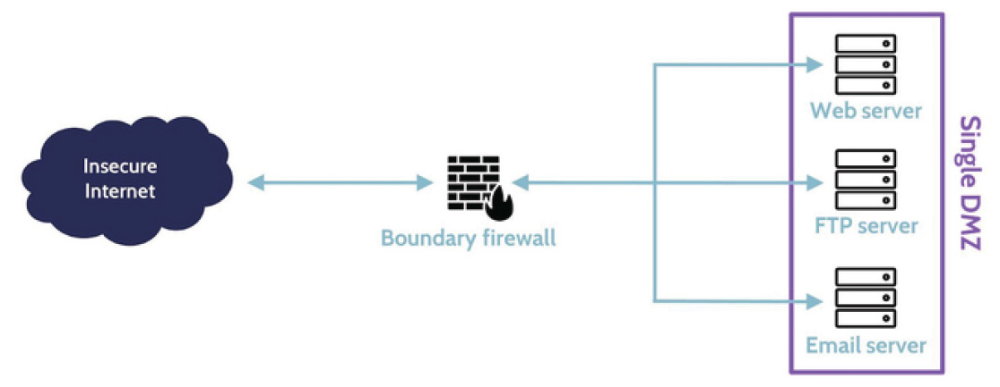
Figure 4-30: A Traditional Network
In contrast to a physical approach, virtualized networks allow you to deploy virtual firewalls easily and at low cost. You can easily put virtual firewalls in front of each server, creating three separate DMZs, as shown in Figure 4-31. You could have much tighter rules on the firewalls for each of these network segments because the firewall in front of your web server would only need to let through web traffic, the firewall in front of your FTP server would only need to let through FTP traffic, and so on.
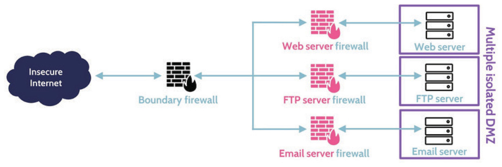
Figure 4-31: An Example of Microsegmentation
The benefit of having these virtualized segments with their own firewalls is that the much stricter rules limit the opportunities for malicious traffic to get through. In addition, if an attacker does manage to get a foothold on one of your servers, such as your web server, they would not be able to move laterally as easily. They would still need to get through the other firewalls if they wanted to reach your FTP or mail servers.
As this example has demonstrated, virtual networks allow for microsegmentation, sometimes with only a single asset in the network segment. Not only does this make it substantially more difficult for hackers to move across the network, but it also allows you to set granular and precise firewall rules for each network segment. This compartmentalization is a significant security advantage.
Some technologies that we use alongside microsegmentation are outlined in Table 4-35.
|
Network overlays/encapsulation |
The creation of virtual networks that are abstracted or overlaid on top of the physical network, |
|
Distributed firewalls |
As we outlined in our example, microsegmentation can be used to easily and cheaply deploy multiple firewalls, allowing for much more granular firewall rules. |
|
Distributed routers |
Similar to distributed firewalls, distributed routers allow us to distribute routing rules to individual workloads as opposed to having one central router. |
|
IDS/IPS |
Intrusion detection systems and intrusion prevention systems can be strategically deployed to protect individual workloads or network segments. We discuss IDS/IPS in more detail in section 4.2.4. |
|
Zero trust architecture |
Microsegmentation allows us to implement granular trust zones. We discuss ZTA in section 3.1.2. |
Table 4-35: Technologies Used Alongside Microsegmentation.
Proxy
One way to provide strong security across a network is through the utilization of what are known as proxies. A proxy is a device that acts on behalf of something else, commonly a user or application. In the context of a network, as shown in Figure 4-32, a proxy helps facilitate the connection between a client and a server, because it is better equipped to manage and direct outgoing and incoming traffic. A proxy or proxy server is an intelligent application or hardware that acts as an intermediary and is placed between clients and a server. As a result of the inherent intelligent nature of proxies, they're usually found at Layer 7-the Application layer-of the OSI model. In Figure 4-32, the client perceives the connection as being direct to the server, though the server perceives otherwise-the connection is from the server to the proxy. In reality, the actual connection in both cases is from the client to the proxy and from the server to the proxy. All decision requests are routed through the proxy, which has the intelligence and ability to make decisions, enforce rules, and otherwise manage requests.
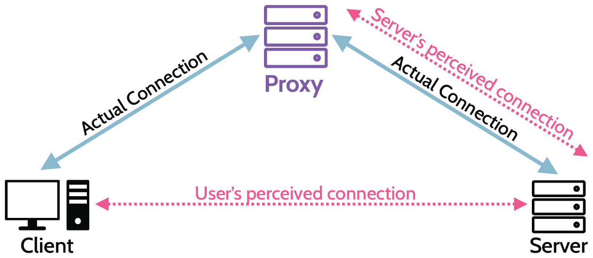
Figure 4-32: Proxy Use
This provides enhanced security because devices like web proxies are used to filter requests and discard any traffic that resolves to a known malicious destination. That can help keep the environment secure because if that proxy wasn't there to perform filtering, the user would have easily navigated to a malicious domain.
NAT and PAT
Understand NAT and PAT
An example of NAT was already mentioned in section 4.1.6, where the home router scenario was discussed. As a refresher, NAT is the mechanism that allows us to translate private IP addresses to public ones and vice versa. PAT is another mechanism that can be used, which helps us perform port translation, in the same notion as IP address translation is performed. At the same time, NAT and PAT provide a layer of security to organizations by masking internal networking schemes, which can hinder reconnaissance efforts of attackers. NAT and PAT are summarized in Table 4-36.
|
Network Address Translation (NAT) |
Port Address Translation (PAT) |
|
In its simplest form, NAT changes IP addresses to other IP addresses. For example, a private, internal, and non-routable IP address to a routable IP address. |
PAT is an inherent part of NAT, and it helps keep track of individual internet requests using unique port assignments for each request. |
Table 4-36: NAT and PAT
An example of NAT/PAT operation is depicted in Figure 4-33.
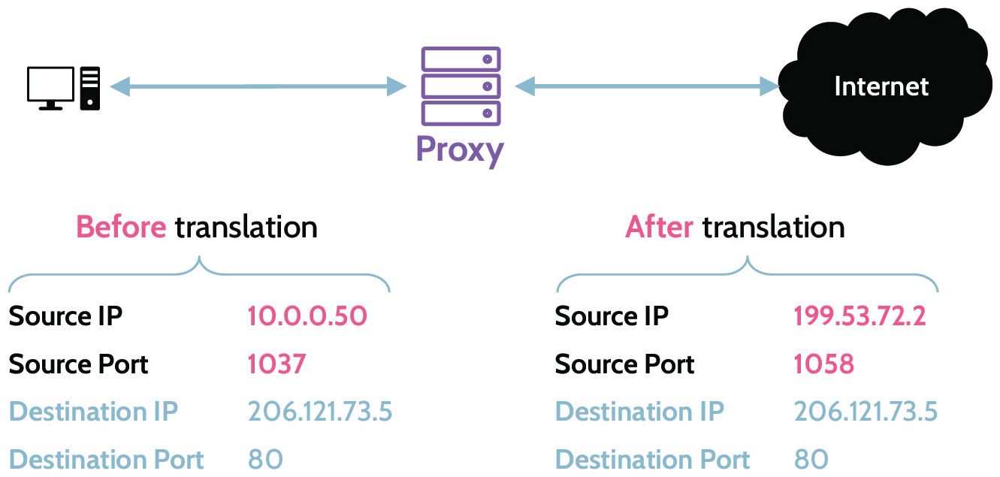
Figure 4-33: NAT/PAT Operation
It's easy to see that NAT is used to change the source IP address from 10.0.0.50 (a private, non-routable address) to 199.53.72.2, which is a publicly routable IP address that allows access to internet-based resources. At the same time, PAT is used to change the source port from 1037 to 1058, which is a unique port assigned only to the connection in this example. If other connection requests existed, the source IP after translation would likely be the same, but the source port would be different-it would be unique for each connection. Because of this uniqueness, when request results are returned, the proxy server can easily track and route those results to the device from which the original request was made.
4.2.2 Firewall Technologies
CORE CONCEPTS |
|
|
|
|
|
What is a firewall?
Understand the different firewall technologies and pros/cons of each
A firewall is a concept that enforces security rules between two or more networks by performing traffic filtering. A firewall could be as simple as a router or as complex as a set of applications that work together to protect a network. In network security, a firewall either allows or blocks traffic, based upon predefined rules. Firewalls are typically found between an internal network and the Internet, but they're also frequently used internally to protect different network segments from each other and they are preventive controls.
Firewall Technologies
Table 4-37 summarizes the different firewall technologies in use today.
|
Packet Filtering |
|
|
Stateful Packet Filtering |
|
|
Circuit-Level Proxy |
|
|
Application-Level Proxy |
|
Table 4-37: Firewall Technologies
Understand where different firewall technologies are found in the OSI model and implications of the same
Additionally, with the functionality described above, it makes sense that firewall technologies exist at different layers of the OSI model. Recall from earlier discussion that efficiency and intelligence vary at each layer of the OSI model. At the lower layers, intelligence is very low, but efficiency is very high; at the higher layers, intelligence is very high, but efficiency is much lower. Table 4-38 breaks down where firewalls live in the OSI model and key characteristics of each firewall technology.
|
Simple Packet Filtering |
Stateful Packet Filtering |
Circuit Proxy |
Application Proxy |
|
OSI Layer 3 Network |
OSI Layer 3 & 4 |
OSI Layer 5 Session |
OSI Layer 7 Application |
|
Simplest |
Complex |
More Complex |
Very Complex |
|
Fastest |
Fast |
Higher latency |
Highest latency |
|
Filters based on source and destination IP address and port |
Maintains state table and filters based on pattern matching |
Filters sessions based on rules |
Filters based on data (Payload) |
Table 4-38: Firewalls and OSI Layers
Context-Based Access Control (CBAC)
CBAC is a feature of firewall software that intelligently filters TCP and UDP packets based on application layer protocol session information. It allows for deep traffic inspection and filtering to take place, that is, it's able to detect potential DDoS attacks or provide advanced statistics about the various connections and protocols used.
4.2.3 Firewall Architectures
CORE CONCEPTS |
|
|
|
With advancements in firewall technologies, firewall architectures have also evolved and become more sophisticated. Firewall architectures specifically focus on how firewall technologies can best be utilized and deployed to provide robust security for an organization.
Packet Filtering
A packet filtering firewall architecture, depicted in Figure 4-34, is the simplest one. The internal network is represented by the computer icons, and a simple router is placed between the internal network and the internet or another untrusted network. The router, which operates at Layer 3, can only make decisions based upon information that exists at Layer 3-the header portion of the packet, which contains information like source IP, destination IP, service being requested, and so on. Thus, decision-making capabilities are very limited, but efficiency and speed of decision-making is very high.
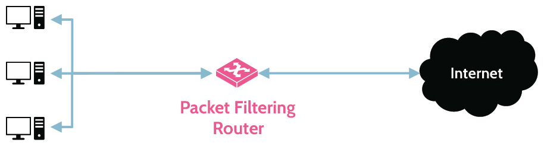
Figure 4-34: Packet Filtering Firewall
Dual-Homed Host
A dual-homed host improves upon a packet filtering router by replacing it with a more intelligent computer or host that contains two network cards. The host can understand all layers of the OSI model and can therefore support all types of firewall technologies described above. As a result, the host can make simple to very complex decisions. This architecture is depicted in Figure 4-35.
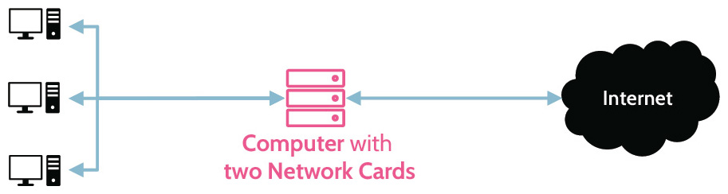
Figure 4-35: Dual-Homed Host
Screened Host
By combining the architectural elements of a packet filtering and dual-homed host firewall, a screened host firewall architecture results as shown in Figure 4-36. The router can handle the first level of decision-making related to incoming packets, and any packets that are allowed through can then be further examined by the bastion host, which can be any type of firewall technology. In addition to providing initial filtering services, the packet filtering router can act as a screening device for the bastion host. In other words, before an attacker could target the bastion host, they would first need to compromise the router. This is why this type of firewall architecture is known as a screened host firewall architecture.
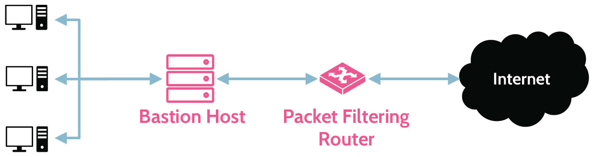
Figure 4-36: Screened Host
Screened Subnet
Figure 4-37 shows a screened subnet architecture, where two firewalls are used and between them a subnet, such as a DMZ, can be created. Traffic from the outside can be specifically directed to the DMZ and thereby protect the internal network from potential attacks. Screened subnet architectures are expensive as two firewalls are required; however, a potential advantage is that the two firewalls could be purchased from different vendors. Thus, if a vulnerability is discovered in one firewall, the same vulnerability is unlikely to exist in another vendor's firewall.
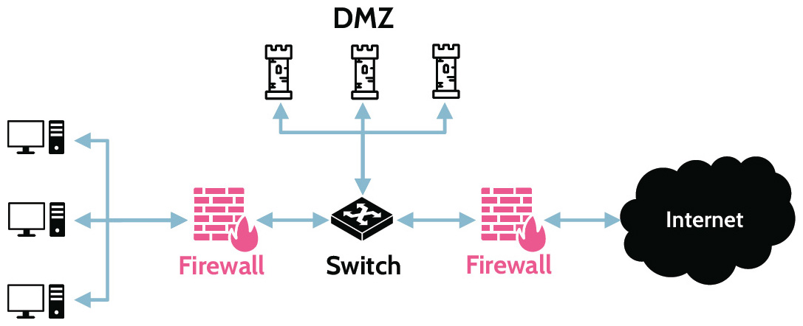
Figure 4-37: Screened Subnet
Three-Legged Firewall
Figure 4-38 depicts a three-legged firewall (or three-zoned firewall), by virtue of the three connection points, although any number of connection points could really exist. This is dependent on the needs and creativity of the organization. Any number of firewall technologies can be utilized in the context of this type of firewall, and the choices made in this regard should directly reflect the security needs of the organization and the assets being protected.
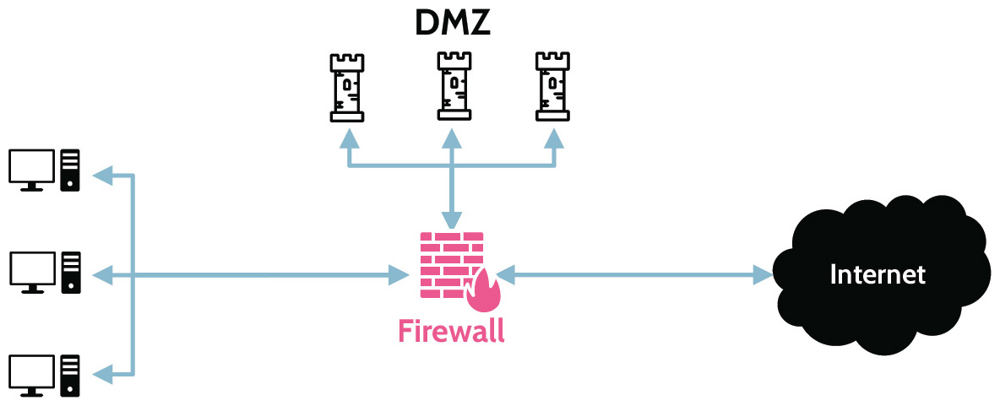
Figure 4-38: Three-Legged Firewall
4.2.4 IDS and IPS
CORE CONCEPTS |
|
|
|
|
|
|
|
|
Considering that firewalls are preventive controls, but a complete control encompasses prevention, detection, and correction, it follows that other systems should be in place and work with firewalls to provide the most protection to an organization. Specifically, these systems should provide detection and correction capabilities, and at the network level this involves data inspection.
Data Inspection
At a high level, data inspection involves monitoring and examining transmitted data and taking appropriate action if not allowed by security rules. Drilling down a bit, data inspection includes the activities summarized in Table 4-39.
|
Virus scanning |
Files are scanned against known signatures for malware. |
|
Stateful inspection |
Dynamic state/context table is maintained to track and analyze communications between systems. |
|
Content inspection |
Content of mobile code is scanned and inspected for compliance with specific security rules. |
Table 4-39: Data Inspection Activities
Understand the similarities and differences between IDS/IPS
IDS and IPS
Drilling even further, data inspection can be accomplished using devices created specifically to examine the header and data (or payload) portions of a packet.
An Intrusion Detection System (IDS) is just as the name suggests-a detection system. An IDS examines traffic at the network level or the host level, specifically looking for malicious activity, policy violations, or other signs of suspicious activity and can alert and/or log those events. An IDS does not take direct action against malicious activity; however, the activity could trigger the corrective steps that need to happen, for example, by being tied back to a firewall, the firewall could take corrective action like filtering packets or blocking IP addresses.
An Intrusion Prevention System (IPS), on the other hand, can prevent, detect, and take corrective action when necessary. When an offending pattern is identified, the IPS can, for example, block the source IP address or terminate a connection.
IDS and IPS systems are summarized in Table 4-40.
|
Intrusion Detection System (IDS) |
Intrusion Prevention System (IPS) |
|
Monitors a network or host for malicious activity or policy violations and reports events. |
Monitors a network or host for malicious activity or policy violations, reports events, and attempts to block. |
Table 4-40: IDS and IPS
Network-Based versus Host-Based
There are two types of IDS and IPS systems: network-based and host-based.
Understand the pros and cons of networkbased vs. host-based IDS/IPS
Network-based IDS/IPS require strategically placed sensors across a network and monitor network traffic to ensure that rules are applied. Host-based IDS/IPS run as agents on specific devices, like servers and other mission-critical systems, and do the same thing. From the perspective of which type of device provides the best protection, a combination of both types offers the best means of protection, detection, and correction for a network and associated critical systems. Network-based versus host-based IDS/IPS systems are summarized in Table 4-41.
|
Network-Based IDS/IPS |
Host-Based IDS/IPS |
|
Monitors network traffic transiting a network segment. |
Installed on a host (server) and monitors only that host. |
Table 4-41: Network-Based vs. Host-Based IDS/IPS
IDS/IPS Network Architecture
Understand typical placement of IDS and IPS
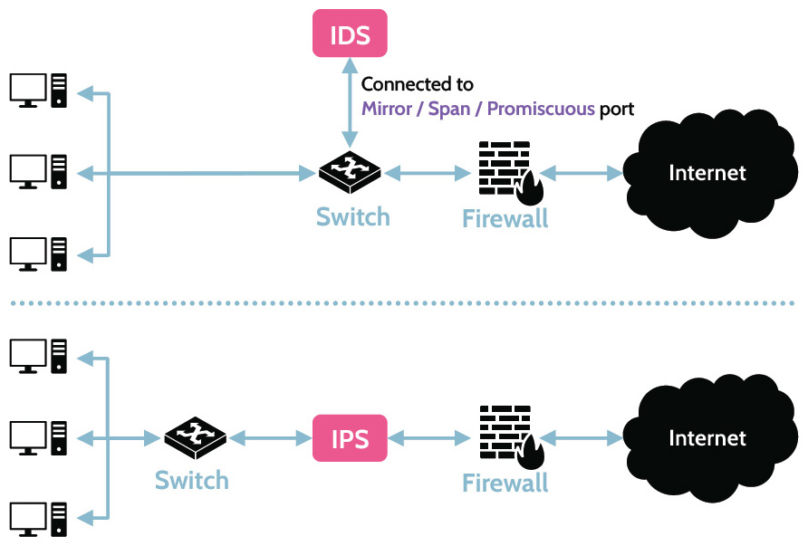
Figure 4-39: IDS/IPS Architecture
The sole purpose of an IDS is to detect, and to gain the benefits of a complete control, the IDS would need to be coupled with something else that could provide the additional capabilities of prevention and correction. As shown in the top half of Figure 4-39, an IDS is connected to a network via a mirror or span port (also known as promiscuous port). This allows the IDS to get a copy of all network traffic. If potentially malicious traffic is identified, the IDS can communicate with the firewall, which can then take preventive and corrective actions.
In the lower half of Figure 4-39 the IPS is placed in line with the network traffic, because it has the capability to detect, prevent, and correct. As traffic comes into the network, it passes through the IPS. If a rule is triggered for malicious activity, the IPS can act and prevent that from traversing the rest of the network.
IDS & IPS devices can potentially be placed in numerous locations across a network depending on where detection and correction capabilities are desired. Typically, an IDS/IPS device needs to be placed in each network segment to be monitored. The pink boxes in Figure 4-40 very roughly depict some of the potential IDS/IPS locations in a basic network architecture. The exact placement and selection of IDS or IPS devices is a complicated topic beyond the scope of the CISSP exam.
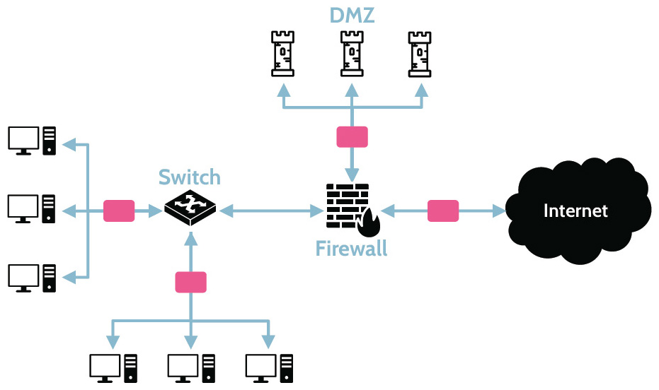
Figure 4-40: The Need for IDS/IPS
Mirror/Span/Promiscuous Port
Understand what is meant by any term that uses the words mirror, span, or promiscuous with the word port
When a port on a network device (e.g., switch) is described as mirror, span, or promiscuous it's meant that traffic passing through that device is copied to that port and any device connected to it, like an IDS, can obtain a copy of it for inspection. When you install Wireshark (one of the most common packet analyzers in the industry), at some point of the installation process it warns you that the network card will now be set in promiscuous mode so that the machine can capture surrounding network traffic.
Setting a device port to this mode allows broadcasts from any device on the network to be monitored, which can then allow the IDS/IPS to work most effectively.
IDS/IPS Detection Methods
Understand the two types of IDS/IPS analysis engines and how each works
Two types of analysis engines are used in IDS and IPS. These are signature-based and anomaly-based, each of which are discussed in Table 4-42. Signature-based engines focus on known types of attacks and use this information to build a database of patterns for detection purposes. Anomaly-based engines look for unusual, abnormal, and out-of-the-ordinary patterns, which implies they understand what is normal and predictable. Anomaly-based engines therefore go through a learning process that involves monitoring user activity and understanding what is considered normal, and anything that is out of the ordinary will be triggered as an anomaly.
|
Signature-based |
Signature-based detection involves looking for known signatures of malicious activity, such as file hashes, suspicious email subject lines, malicious IP addresses or byte sequences. These signatures are added into the analysis engine. When an IDS/IPS sees one of these signatures in the network traffic, it can send an alert, which makes signature-based detection useful for finding known threats. However, signature-based detection systems have no hope of detecting the latest threats if they don't have the signatures for them. This leaves us vulnerable to the latest attacks. |
|
Anomaly-based |
Anomaly-based detection seeks to complement signature-based detection by first creating a baseline of normal behavior within the system, and then sending alerts when it detects anomalous or suspicious behavior. The major downsides are that it is computationally expensive and it can generate a lot of false positives. There are four major ways to detect anomalies:
While anomaly-based detection isn't perfect, it works under the assumption that attacker traffic will often look quite different to normal traffic. Anomaly-based detection can help us to detect threats even if it's a new attack and we don't already have signatures for it. |
Table 4-42: IDS/IPS Detection Technologies
Ingress and Egress Monitoring
The terms ingress and egress refer to the direction of flow or, in this case, network traffic, as shown in Figure 4-41. Ingress is the act of going in or entering; egress is the act of going out or exiting. It follows that ingress monitoring is monitoring all traffic entering a network; egress monitoring is monitoring all traffic exiting a network. The best protection involves both types of monitoring. Ingress monitoring can help prevent malicious traffic from entering a network; egress monitoring can help prevent data loss, denial-of-service, and other types of malicious activity from originating from the corporate environment. It's important that IDS/IPS monitor traffic in both directions.
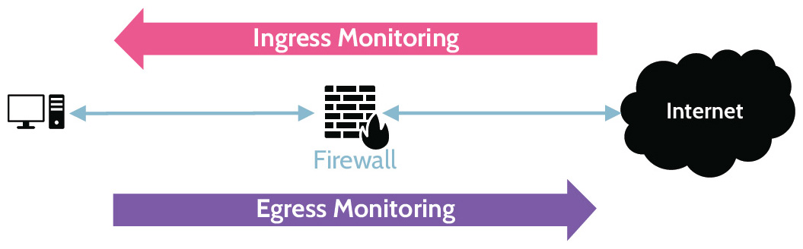
Figure 4-41: Ingress and Egress Monitoring
Allow List and Deny List (Whitelisting and Blacklisting)
Understand the difference between the terms "allow list" (white list) and "deny list" (black list)
A technique that IDS/IPS devices can use to detect and potentially block suspicious traffic is allow lists and deny lists.
Allow and deny lists are lists of IP addresses and specifically determine what action may or may not be performed with respect to the IP addresses in a given list. With an allow list, network traffic to listed IP addresses is allowed. Any other IP address is blocked by default. Deny lists are the exact opposite; any traffic to listed IP addresses is specifically blocked. Any other IP address is allowed by default.
Note, that "allow lists" and "deny lists" are much better terminology, and these terms are becoming more pervasively used in the industry. However, you may still see references to whitelists and blacklists, including on the exam, which is why we have noted this terminology.
Allow lists and deny lists are summarized in Table 4-43.
|
Allow List (Whitelist) |
Deny List (Blacklist) |
|
The following IPs may be visited. All other addresses are NOT permissible. |
The following IPs may NOT be visited. Any other address is permissible. |
Table 4-43: Allow List and Deny List
4.2.5 Sandbox
CORE CONCEPTS |
|
|
|
When an IDS/IPS identifies potentially malicious activity, something called a sandbox can be activated. A sandbox is a safe area, where unknown or untrusted code can be isolated and run and tested and determined to be malicious or not. Being able to run potentially malicious software in a sandbox environment is one of the corrective actions that an IDS/IPS can take. In addition, sandboxes are used quite often by malware analysts who run malicious code in them and try to identify indicators of compromise and gain an in-depth understanding of how malware operates.
Alert Statuses
Understand false-positives and false-negatives and the worst possible outcome
Table 4-44 illustrates the possible conditions of alerts that may be received by security tools. These outcomes are quite important and can denote if tools are working optimally or if tuning is required to maximize efficacy.
1. True Positive: An attack is taking place and the security tool raises an alert to denote that fact. This indicates appropriate operation is in effect.
2. True Negative: No attack is present, and no alert is generated by a security tool. This indicates appropriate operation is in effect.
3. False Positive: An alert is generated by the security tool; however, there's no actual attack taking place (e.g., a suspicious login alert was generated for a user logging in from Colombia who had never logged in before from that location, but that person is legitimately there for work for the next three months). This is indicative of tuning required to eliminate unnecessary alerts from flooding the security team.
4. False Negative: An attack is ongoing, but the security tool failed to raise an alert. This is the worst scenario, since the security team isn't aware of malicious activity actually taking place in the environment. New rules being applied, policy redesigns, and new attack signatures are usually some of the things analysts use to resolve this issue.
|
True |
False |
|
Positive |
True-Positive |
False-Positive |
|
Negative |
True-Negative |
False-Negative |
Table 4-44: Possible Alert Statuses
Tuning our security tools is the process of adjusting their sensitivity. Ideally, we want as few false positives as possible, because we don't want our security teams to get overwhelmed with unnecessary alerts to the point that they become fatigued and end up ignoring a true positive. However, if we tune them too low, we run the risk of a false negative where an attack is actually occurring but the security team doesn't receive an alert. Appropriate tuning is a very delicate balance that will vary between organizations, their assets and the threats they face.
4.2.6 Honeypots and Honeynets
CORE CONCEPTS |
|
|
|
|
|
|
What type of control do honeypots/honeynets represent?
Honeypots are individual computers (usually running a server OS posing as interesting targets for an attacker), but they contain no real data or value to the organization employing them. Honeynets are two or more honeypots networked together, and a sophisticated honeynet will also employ the use of routers, switches, or gateways. Honeypots and honeynets invariably always contain vulnerabilities-usually unpatched systems, applications, open ports or running services-that aim to entice potential attackers into exploring further. This exploration can then be detected. Honeypots and honeynets are usually located within the DMZ, or within a separate subnet and are usually built using virtualized systems.
Purpose of honeypots and honeynets
Honeypots and honeynets, depicted in Figure 4-42, can serve a number of purposes, including:
Detecting sophisticated cyberattacks, such as Advanced Persistent Threats (APTs), where an attacker gains access to a network / system and stays there undetected for a long period of time. APTs are difficult to detect with traditional detective controls like an IDS system, as the attacker is very intentionally minimizing any activities that could be detected. For example, the attacker will use passive monitoring and data gathering techniques vs. actively scanning the network or systems.
Helping trace how an attacker has traversed or moved through a network
Distracting attackers away from valuable systems or resources
Gathering valuable information that may help a security team better define their organization's security plan
Conducting research by companies that serve the cybersecurity community
However, honeypots, and honeynets come with risks, including:
Attackers might be able to leverage access to the honeypot or honeynet and gain access to real hosts or network resources, depending on the underlying architecture.
If employed incorrectly, legal action against the company using the honeypot or honeynet could be the result, which is known as entrapment.
In either case, the ultimate responsibility for damages or monetary liability would rest upon the shoulders of senior management.
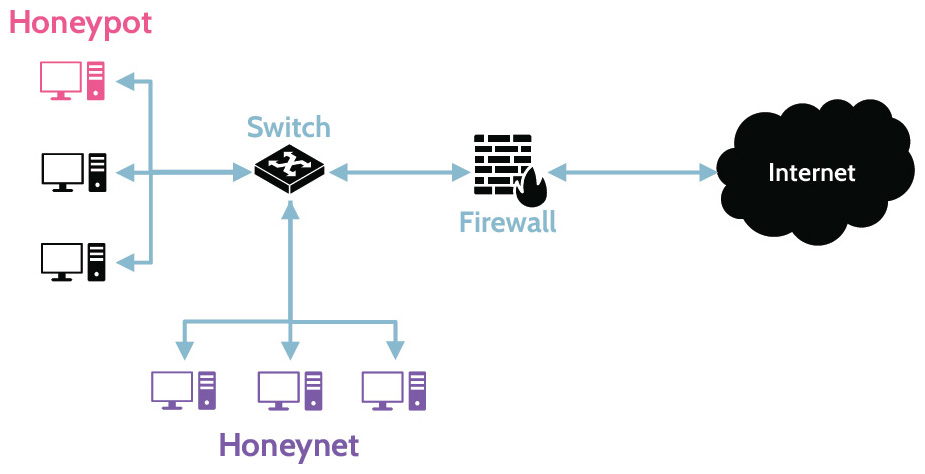
Figure 4-42: Honeypot and Honeynet
Enticement and Entrapment
Difference between enticement and entrapment
As noted above, when working with honeypots and honeynets, an organization must be careful to avoid entrapment of a potential attacker, which is illegal. Table 4-45 provides the definitions of enticement and entrapment in the context of honeypots, including their core difference.
|
Enticement |
Entrapment |
|
Legal activity of persuading someone to commit a crime that they were already planning to commit. |
Illegal activity of persuading someone to commit a crime that they would not otherwise have committed |
Table 4-45: Enticement and Entrapment
4.2.7 Endpoint Security
CORE CONCEPTS |
|
|
Primary focus of endpoint security and where commonly found
Endpoint security refers to the specific protection of client devices (endpoints) commonly found in corporate networks. Laptops, tablets, mobile devices, printers, IoT devices, and wireless devices are common examples of endpoints that are also potential attack points and paths to corporate networks. Endpoint security strives to minimize the attack surface and narrow the path to the corporate network as much as possible.
How network access control (NAC) solutions complement endpoint security
In the past, endpoint security was mainly accomplished through antivirus software. Today, endpoint security has evolved and become much more robust. In addition to antivirus software, many organizations deploy comprehensive device management policies and enforcement applications, endpoint data leak prevention (DLP), Network Access Control (NAC) solutions to restrict access (e.g., if an endpoint does not pass a health check) and platforms focused on endpoint threat detection, response, and monitoring.
4.3 Implement secure communication channels according to design
4.3.1 Tunneling and VPNs
CORE CONCEPTS |
|
|
|
|
|
|
|
Remote Access
Implementing secure communication channels is an important component of network security. In other words, putting protections in place to support network connections-especially remote access-is critical. Remote access is connecting to corporate resources over an insecure network (internet). Due to this fact, a method to protect traffic across that untrustworthy network must be utilized, and the best method is usually a VPN solution.
Tunneling
Before we can understand VPN solutions in depth, the concept of tunneling (depicted in Figure 4-43) must first be examined, because tunneling is the precursor to establishing a VPN. VPN is tunneling plus encryption; without encryption, it can only be called a tunnel. Tunneling is simply the process of taking a packet and placing it inside the data portion of another packet. If the header and data portion of one packet are placed into the data portion of another packet, a tunnel is created. Some people also refer to this as encapsulation. The header and data from the one packet become the data portion of the other packet.
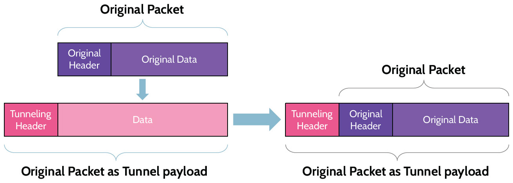
Figure 4-43: Tunneling Operation
This encapsulation process does not hide anything. It's simply placing the original packet inside the data portion of another one. If the information needs to be hidden, to be protected, encryption of the data portion of the new packet must take place. This results in tunneling plus encryption.
Why is tunneling used? The premise behind tunneling is that the encapsulated packet is being forced along the path specified in the header of the host packet. So, whatever path might be specified in the header of the encapsulated packet, the header of the host packet will dictate the actual path both packets follow. However, the encapsulated packet can still be read because no encryption is used.
Tunneling protocols exist at several different layers of the OSI Model. This starts at Layer 2 and can go all the way up to Layer 7. At each layer, different functionality is available, and it's important to remember that the higher the layer, the bigger the trade-off between functionality and performance. At lower layers, performance is very efficient, but functionality is more limited. At higher layers, functionality is considerably enhanced, but performance is slower. Decisions about which tunneling protocol to use should take these factors into account.
Generic Routing Encapsulation (GRE)
Pros and cons of GRE and how it works
In a sense, Generic Routing Encapsulation (GRE), depicted in Figure 4-44, is a tunneling protocol that can encapsulate a variety of protocols and route them over IP networks. GRE can transport traditional IPv4 traffic as well as multicast and IPv6 traffic, and it provides a means by which traffic can be exchanged between two networks using a network like the internet. GRE works by encapsulating the original packet-the payload that needs to be delivered-inside an outer packet. Once the receiving endpoint is reached, the GRE packet is removed and the original packet-the payload-is forwarded to the ultimate destination. Unlike IPsec, which can use ESP to provide encryption and secure a payload, GRE is not considered a secure protocol, because it provides no encryption, just encapsulation.
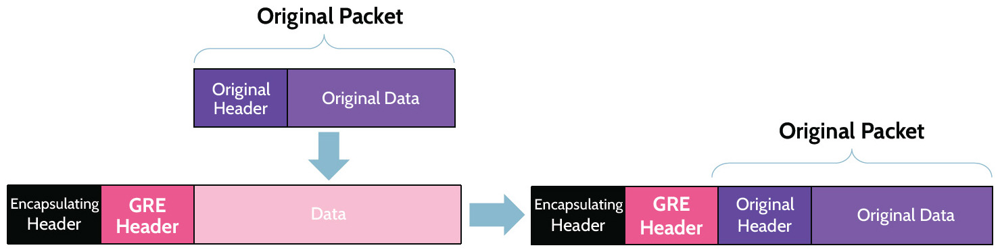
Figure 4-44: GRE Tunneling
Split Tunneling
Understand what a split tunnel is and what its inherent weaknesses are
Split tunneling allows a user to access disparate resources-the internet and a LAN, for example-at the same time, without all the traffic passing through the VPN. In the example shown in Figure 4-45, in the upper half of the diagram, access to a corporate LAN can be achieved through use of a VPN (encrypted tunnel) established through a hotel network, while noncorporate resource access, illustrated in the lower half of the diagram, is achieved through a direct connection from the user's computer to the hotel network. It's important to note, however, that running internet traffic directly from the user's computer through the hotel network can bypass organizational security controls, which can create significant risk for the organization.
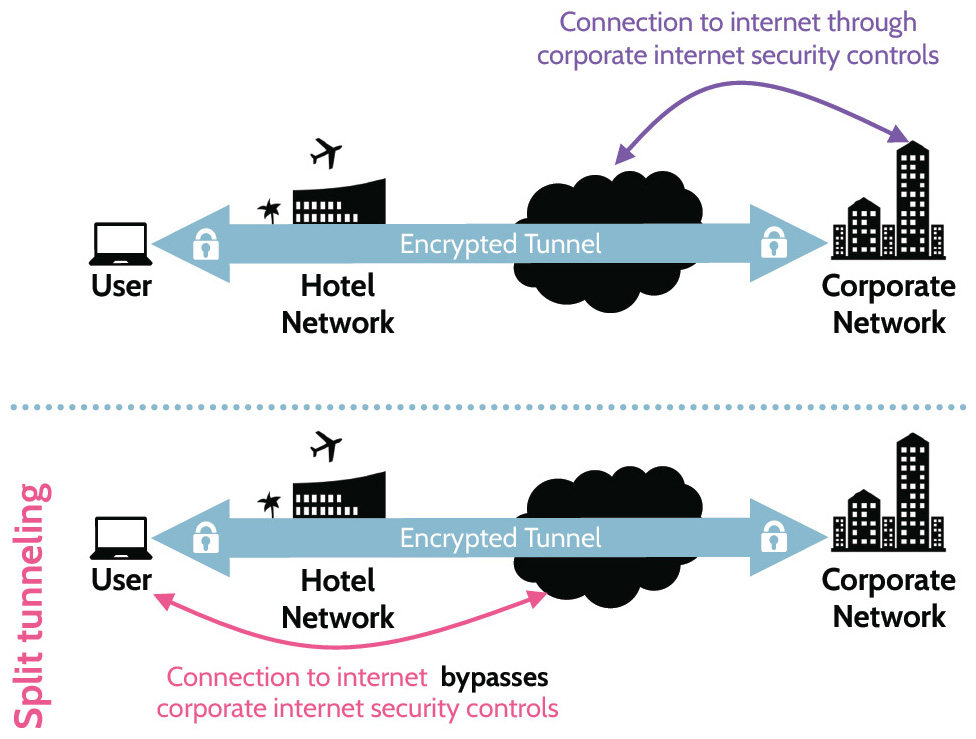
Figure 4-45: Split Tunneling Operation
At the same time, split tunneling helps reduce network bandwidth and resource consumption. For example, if the user is browsing to a publicly accessible resource, like Google drive, then there's no point in having that traffic traverse the corporate VPN tunnel and then be redirected to Google's servers. It could just be directed there to begin with, thus optimizing resource consumption. On the other hand, if a company file server is being accessed, the VPN tunnel can be used.
Virtual Private Network (VPN)
Know the most reliable and cost-effective way to securely connect two networks
VPNs are one of the most reliable and cost-effective ways to securely connect two networks together.
To create a VPN, tunneling plus encryption is needed. A number of solutions exist that utilize SSL/TLS or IPsec VPN technologies. Layer 2 and Layer 3 VPN solutions typically provide both the functionality and efficiency required to host a VPN.
Tunneling and VPN Protocols
Know the most common Layer 2 protocols and understand the differences between PPTP and L2TP
PPTP, L2F, and L2TP are Layer 2 tunneling protocols. They're efficient but don't provide much in the way of functionality and security. Moving up layers allows these needs to be met, and much more functionality can be gained. For example, SSH-at Layer 7-can be used to host command line utilities that would normally contain zero security. Telnet, FTP, and similar protocols don't contain security, but they become very secure when utilized in the context of an encrypted SSH tunnel. Remember, a VPN requires a tunnel and encryption.
Table 4-46 illustrates commonly used tunneling protocols that include encryption capabilities, with one exception: L2TP. The protocols that contain encryption capabilities can be used to create VPNs. In the case of L2TP, it is often deployed in conjunction with IPsec, which adds the needed encryption element to create a VPN.
|
Protocol |
Tunneling |
Encryption |
OSI Layer |
|
|
SSH |
Secure Shell |
|
|
7 - Application |
|
SOCKS |
Socket Secure |
|
|
5 - Session |
|
SSL/TLS |
Secure Sockets Layer/Transport Layer Security |
|
|
4 - Transport |
|
IPsec |
Internet Protocol Security |
|
|
3 - Network |
|
GRE |
Generic Routing Encapsulation |
|
|
Encapsulation at multiple layers |
|
L2TP |
Layer 2 Tunneling Protocol |
|
|
2 - Data Link |
|
L2F |
Layer 2 Forwarding Protocol |
|
|
|
|
PPTP |
Point-to-Point Tunneling Protocol |
|
|
|


Table 4-46: Common Tunneling Protocols
4.3.2 IPsec
CORE CONCEPTS |
|
|
|
|
|
Of the tunneling and VPN protocols listed in Table 4-46, IPsec is the preferred method for establishing a VPN. One thing to remember about IPsec is that it is natively supported in IPv6 and is therefore becoming a standard component of networking. IPsec offers two advantages over other protocols from a security perspective. It adds authentication of devices as well as encryption. Authentication is added through AH and encryption through ESP. AH provides integrity, data-origin authentication, and replay protection. ESP provides all the functions AH does, in addition to ensuring confidentiality, as it provides payload encryption.
Think of each as subprotocols or elements of IPsec.
Understand elements and modes of IPsec and services provided by each mode
Additionally, IPsec can be utilized in two different modes: transport mode and tunnel mode. Transport mode uses the header of the original packet, whereas in tunnel mode the header of the new packet encapsulates and encrypts the AH or ESP header and original IP header in the data, or payload, portion of the new packet. Recall from earlier that the original packet was encapsulated in the data portion of a new packet. Now, a choice exists: the header and payload of a packet can be encrypted inside the new data portion. One encrypts only the payload; the other encrypts the header and the payload. Table 4-47 and Table 4-48 and Figure 4-46 summarize the IPsec modes.
IPsec Modes
|
Authentication Header (AH) |
Encapsulating Security Payload (ESP) |
|
Provides integrity, data-origin authentication and replay protection |
Provides integrity, data-origin authentication, replay protection, and confidentiality through encryption of payload |
Table 4-47: Authentication Header (AH) and Encapsulating Security Payload (ESP)
|
Transport Mode |
Tunnel Mode |
|
Use header of original packet, followed by the AH or ESP header, then the payload |
New header encapsulates the AH or ESP header and the original IP header and payload |
Table 4-48: IPsec Modes
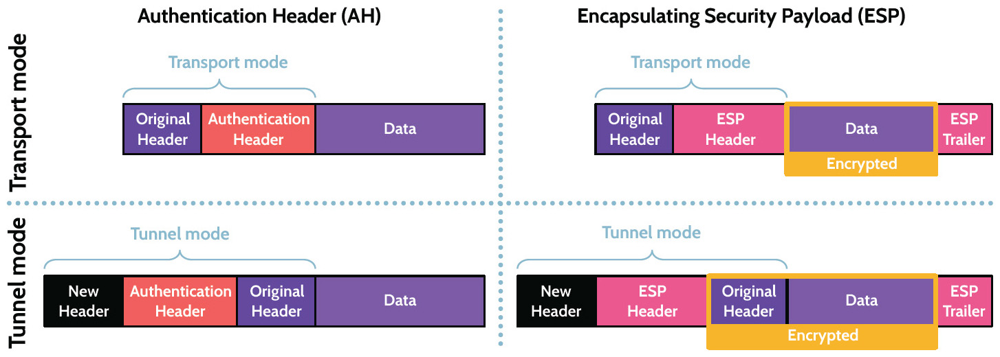
Figure 4-46: IPsec Modes
Internet Key Exchange (IKE)
What protocol is used to exchange keys with an IPsec VPN?
To create a VPN, two things are required: tunneling plus encryption. The only type of encryption that can be used for a VPN is symmetric, meaning the same key is utilized at each end of the VPN connection. This implies that all VPN solutions must include a key management protocol that allows the same secret to be generated at each end. In the context of IPsec, the key management protocol used is known as Internet Key Exchange, or IKE. IKE is essentially a version of Diffie-Hellman and is used by IPsec to generate the same session key at each end of a VPN.
Security Association (SA)
IPsec tunnels are established through a Security Association (SA). SA is a one-way establishment of attributes at the start of communication between two entities. Imagine two people who want to connect and communicate. To do so, security associations would need to be established. Because an SA is one-way form of communication (like walkie-talkies), where only one person can communicate at a time, in order for two people to communicate, an SA would need to be established in each direction. If IPsec AH and ESP components are needed, SAs are needed in each direction for each component. So, if both AH and ESP are needed, a total of four SAs is required-two SAs in each direction.
Attributes include:
Authentication algorithm
Encryption algorithm
Encryption keys
Mode (transport or tunnel)
Sequence number
Expiry of the SA
4.3.3 SSL/TLS
CORE CONCEPTS |
|
|
|
|
|
Over the years, Secure Sockets Layer (SSL) has been instrumental as a means of securing communications channels. Of course, like most technologies, it's been revised over the years, with the latest revision being SSL 3.0. In 1999, SSL was revised yet again, but this time, to remove confusion about where this protocol operates in the OSI model, it was renamed to Transport Layer Security (TLS), and the most recent revision of TLS was released in 2018 as TLS 1.3.
SSL/TLS is used extensively; in fact, most websites that require secure connections between a browser and a web server utilize SSL/TLS. And even though TLS is the proper name, many people still refer to it as SSL. Naming conventions aside, the key is that the latest version is being used, as use of SSLv2-even when used for purposes of backward compatibility-could result in what is known as the DROWN attack exploiting a specific vulnerability in SSLv2. If successful, a DROWN attack could result in a session being compromised, and sensitive information-passwords, credit card numbers, proprietary and other valuable data-could be read or stolen. Because disabling backward compatibility can be somewhat complicated, the best defense against DROWN is for server owners to ensure their private keys are not utilized with web, email, and other servers that allow SSLv2 connections.
Understand the foundational reason for using SSL/TLS
SSL/TLS provides secure client to server connections; for instance, when managing your bank account via the bank's online portal, or when looking at your insurance or medical information from providers of those services. A secure connection can be established between your browser and a secure server anywhere in the world, and the secure connection protects transmission of sensitive information and transactions from eavesdropping. A secure connection can be established in four relatively simple steps, as outlined in Figure 4-47.
Figure 4-47: SSL/TLS Handshake
Understand the SSL/TLS handshake process and how asymmetric and symmetric cryptography both play a role in establishing a secure session
Figure 4-47 shows an example of an SSL/TLS handshake.
You want to purchase something online from Amazon.
Initially, you'd visit Amazon's website by typing www.amazon.com in your browser's address bar. This establishes the initial connection, and at the same time Amazon's server and your browser understand that a secure connection is required, which activates the SSL/TLS handshake process.
1. The client, your browser, will first send a client hello message to the server, which allows the server to determine whether it understands the client, the browser. If all is well, the server will essentially respond with a message saying it understands the browser. Otherwise, if the browser is outdated or doesn't have a compatible version of SSL/TLS installed, the server will respond with some type of error warning.
2. After the initial "hello," the second step requires the server to do something similar and send a server hello message to the client. However, with the hello message, the server will also send its certificate, which contains Amazon's public key.
3. With Amazon's public key, the client's browser understands what certificate authority issued Amazon's certificate. For this example, let's assume that VeriSign issued the certificate. The browser knows this because one of the fields on the certificate is the issuer ID, which the browser uses to look up the issuer, in this case, VeriSign. With this information and built-in functionality, the browser fetches VeriSign's public key and decrypts the certificate. If the certificate decrypts properly, the public key on Amazon's certificate can be trusted and, in fact, Amazon's server has been authenticated. You know your browser is connected to Amazon's server and not a server pretending to be Amazon. Otherwise, to spoof Amazon, VeriSign's certificate would've first needed to be spoofed, which would require access to VeriSign's private key. And only VeriSign has access to its private key.
4. With the first three steps complete, step four involves the creation of a symmetric key (session key) that will be utilized from this point forward for the session. Again, utilizing functionality built into the browser, a session key is created and encrypted using Amazon's public key and then sent back to Amazon, where Amazon's private key will be used for decryption. At this point, the client's browser and Amazon will each hold the same session key, which will be used for further communication. Now safe transmission of authentication information, credit card numbers, and other sensitive information can take place, because only the client and Amazon have access to this specific session.
From the example above, let's highlight some key takeaways.
There's always a need for the client to authenticate the server. In this case, it's much more important for the client to ensure it has authenticated to Amazon. Or when banking, it's vital to know that the client has authenticated to the actual bank. There's really no need for Amazon or the bank to authenticate the client-whether the client is at home or somewhere around the world, the server really doesn't care. However, if this functionality was needed, it's built into SSL/TLS and is known as mutual authentication. In this case, the server can also authenticate the client, which would require the client to have a certificate too.
Only the client can create the session key, which is then sent back to the server encrypted with the server's public key.
The SSL/TLS handshake process happens all the time and very quickly. Once complete, a small lock in the browser address bar will appear, and the URL will begin with HTTPS, which signifies a secure HTTP session is now enforced.
TLS VPN versus IPsec VPN
Understand high level differences between TLS VPN and IPsec VPN, including the layers where they operate and which one provides encryption by default
Both TLS and IPsec VPNs provide secure communication channels, but they do so a bit differently from one another. A comparison is provided in Table 4-49.
|
TLS VPN |
IPsec VPN |
|
|
|
Table 4-49: TLS vs. IPsec VPN
Choosing one type of VPN over another is very dependent upon the requirements of the organization and the specific goals and objectives that relate to security of information being communicated internally and externally. Factors like performance, security, data authentication, and others should be considered in this vein. The approach that might work for one organization could be completely wrong for another organization.
4.3.4 Remote Authentication
CORE CONCEPTS |
|
|
|
|
Understand the importance and use of remote authentication protocols and their similarities and differences
One important consideration related to remote access is that a simple VPN connection does not prove who is sitting behind the VPN. If a company uses SSL/TLS for VPN capabilities, the VPN only protects the traffic between the device on one end and the server or device on the other end. Most organizations also want to know who is using the computer or browser and will therefore use some type of authentication-usually two-factor-for this purpose. Authentication protocols like RADIUS, TACACS, TACACS+, and Diameter, summarized in Table 4-50, are typically the most used for this purpose.
Remote Authentication Protocols
|
RADIUS |
Remote Authentication Dial-In User Service is an application-layer protocol that allows a user to connect to and access network resources. RADIUS was developed to support dial-in networking and provides authentication, authorization, and accounting (AAA). |
|
TACACS+ |
Terminal Access Controller Access Control System Plus was developed by CISCO as an extension of TACACS and an improvement over RADIUS. Unlike RADIUS (which uses UDP) TACACS+ uses TCP and encrypts all the transmitted packets, while RADIUS only poorly obfuscates user passwords. |
|
Diameter |
Diameter is the successor to and an enhanced version of RADIUS. Diameter adds improved security features, such as EAP, which provides a much more secure and robust authentication of users. |
Table 4-50: RADIUS, TACACS+, and Diameter
 MINDMAP REVIEW VIDEOS
MINDMAP REVIEW VIDEOS
 CISSP PRACTICE QUESTION APP
CISSP PRACTICE QUESTION APP
Download the Destination CISSP Practice Question app for Domain 4 practice questions